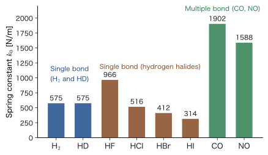

Chapter 19Molecular Vibration — Applications of the Harmonic Oscillator
When infrared radiation with a wavelength near 3.5 μm (near $2900\ \mathrm{cm^{-1}}$ in terms of wavenumber) is shone on hydrogen chloride (HCl) gas, the light is absorbed far more strongly than at other wavelengths. Nitrogen ($\mathrm{N_2}$) and oxygen ($\mathrm{O_2}$) gases show no such absorption. The energy of the absorbed light is used to excite more strongly, by just one step, the vibration in which the two atoms of the molecule alternately move toward and away from each other. The infrared absorption spectrum of a molecule is used routinely in materials analysis (Si–O bonds in glass, C=O bonds in polymers, molecules adsorbed on surfaces, and so on) as a “fingerprint” that identifies the kinds of bonds present. In this chapter we show that the harmonic oscillator solved in Chapter 13 is the simplest and most successful model of this molecular vibration.
In classical mechanics (simple harmonic motion in AD 03, Chapter 7, Section 7.1), the frequency of a mass $m$ at the end of a spring is $\omega=\sqrt{k_0/m}$, and the energy could take any value, depending on the amplitude. In quantum mechanics, the energy takes only the discrete values $\varepsilon_n=(n+\tfrac12)\hbar\omega$ (we write the vibrational energy, with the translation of the whole molecule removed, as $\varepsilon_n$ to distinguish it from the total energy $E$), and the spacing between levels is always the same, $\hbar\omega=h\nu$. For this reason, the infrared absorption appears as (nearly) a single line, and from its position (wavenumber) the stiffness of the bond (the spring constant $k_0$) can be read off as a number. In this chapter we learn, in order: (i) the reduced mass, which replaces two atoms with a single particle, and the harmonic approximation, which says that “the bottom of a molecule's potential well is a parabola”; (ii) the formula $k_0=(2\pi c\tilde{\nu})^2\mu$ that gives the spring constant from the wavenumber, and a table for eight kinds of diatomic molecules; (iii) the isotope effect, in which replacing hydrogen with deuterium lowers the frequency to a fraction close to $1/\sqrt{2}$ of its original value, and the zero-point energy; (iv) how to connect the results for the momentum representation of the harmonic oscillator obtained in Chapter 13 to numbers for molecular vibration ($\Delta x$ and $\Delta p$ of HCl); and (v) why molecular vibration is “frozen out” at room temperature, and the Einstein specific heat.
What we learn about molecules in this chapter carries over directly to polyatomic molecules ($3N-6$ normal modes) and to solids (phonons, Chapter 60). Why a molecule deviates slightly from a harmonic oscillator is treated in the next chapter, on the Morse potential (Chapter 20).
- Be able to separate the motion of a diatomic molecule into the motion of the center of mass and the relative motion of a particle with reduced mass $\mu=\dfrac{m_1m_2}{m_1+m_2}$ (and to follow each line of the algebra yourself)
- Be able to derive $V(r)\approx\tfrac12k_0(r-r_{\mathrm e})^2$ and $k_0=V''(r_{\mathrm e})$ from the Taylor expansion about a stable equilibrium point, and to explain the levels $\varepsilon_n=(n+\tfrac12)\hbar\omega$ ($\omega=\sqrt{k_0/\mu}$) and $\Delta E=\hbar\omega=h\nu$
- Be able to convert among the wavenumber $\tilde{\nu}\ [\mathrm{cm^{-1}}]$, frequency, energy, and wavelength, and to calculate the spring constant $k_0=(2\pi c\tilde{\nu})^2\mu$ from an infrared absorption wavenumber (the table for $\mathrm{H_2}$, HD, HF, HCl, HBr, HI, CO, and NO)
- A preview of the selection rule $\Delta n=\pm1$ for infrared absorption and of the fact that “only vibrations that change the dipole moment are visible in the infrared”
- Be able to predict the change in frequency caused by isotopic substitution (H→D, $^{35}\mathrm{Cl}\to{}^{37}\mathrm{Cl}$), and to estimate the difference in dissociation energy and the kinetic isotope effect from the difference in zero-point energy
- Be able to connect the momentum representations of $\psi_0$ and $\psi_1$ and the result $\phi_n=(-i)^n\psi_n$ obtained in Chapter 13 to numbers for molecular vibration (the spreads in position and momentum of HCl), and to explain their meaning in the language of molecular vibration
- Be able to explain, using $\theta_{\mathrm{vib}}$, the Boltzmann factor, and the Einstein function, that vibration is “frozen out” at room temperature because the vibrational energy levels are discrete
Source notes: Yasuhide Mochizuki, “Physics Notes: Quantum Mechanics 2,” pp. 20–21.
19.1 A Diatomic Molecule as “Two Balls Connected by a Spring” — Reduced Mass and the Harmonic Approximation
19.1.1 Treating molecular vibration with quantum mechanics
Hydrogen chloride, HCl, is a molecule in which a hydrogen atom H and a chlorine atom Cl are joined by a single bond. The length of the bond (the internuclear distance $r$, the distance between the two atomic nuclei) is continually stretching and contracting about an almost constant value $r_{\mathrm e}$. This stretching and contracting is the vibration of the molecule. Starting from the results for the harmonic oscillator in Chapter 13, let us understand that its energy takes only discrete values, and that infrared radiation is absorbed in transitions between vibrational levels.
First, let us sort out what governs this stretching and contracting. Inside a molecule, the atomic nuclei are heavier than the electrons by orders of magnitude (the mass of a single proton is about 1836 times that of an electron). We may therefore regard the electrons as instantly rearranging themselves into the state of lowest energy for the new arrangement each time a nucleus moves slightly. The internuclear potential $V(r)$ is the sum of the electronic energy and the Coulomb repulsion energy between the nuclei, with the internuclear distance fixed at $r$, plotted as a function of $r$. The nuclei are treated as particles moving in this $V(r)$ (the Born–Oppenheimer approximation; we treat it in detail in Chapter 33). As for the shape of $V(r)$, when the nuclei come too close it rises steeply because of the repulsion between the nuclei (and between the inner electrons). When they move apart, the bond breaks and the molecule becomes two separate atoms, so the potential approaches a constant value. In between, it has its minimum at $r_{\mathrm e}$. The shape of this well determines everything about the vibration of the molecule (Figure 19.2).
In what follows, we do not consider the rotation of the molecule (Chapter 21, Chapter 22), and we examine only the motion of the two atoms along the axis of the bond. Take this axis as the $z$ axis, and let $z_1$ be the position of atom 1 of mass $m_1$ and $z_2$ the position of atom 2 of mass $m_2$ ($z_2\gt z_1$). The internuclear distance is $r=z_2-z_1$.
19.1.2 Replacing two atoms with one particle — the reduced mass
The motion of the two atoms must be described as a function of the two coordinates $z_1$ and $z_2$. However, since the potential is determined only by the internuclear distance $z_2-z_1$, a change of coordinates reduces the problem to that of a single particle. Let us carry out once more, in quantum mechanics, the “separation of center-of-mass motion and relative motion” that we saw in classical mechanics (AD 03, Chapter 2, Section 2.4).
Let us first confirm it in classical mechanics. The force that atom 2 receives from atom 1 is $-\dfrac{\partial V}{\partial z_2}=-V'(r)$, and the force that atom 1 receives is $-\dfrac{\partial V}{\partial z_1}=+V'(r)$ (since $V$ is a function of $z_2-z_1$, differentiating with respect to $z_1$ changes the sign). The equations of motion are $m_1\ddot{z}_1=V'(r)$ and $m_2\ddot{z}_2=-V'(r)$. Dividing the second by $m_2$, dividing the first by $m_1$, and subtracting, we obtain
$$ \ddot{z}_2-\ddot{z}_1=-V'(r)\left(\frac{1}{m_2}+\frac{1}{m_1}\right)\qquad\Longrightarrow\qquad \mu\,\ddot{r}=-V'(r),\quad \frac{1}{\mu}=\frac{1}{m_1}+\frac{1}{m_2} $$Thus the internuclear distance $r$ obeys the equation of motion of a single particle of mass $\mu$ moving in the potential $V(r)$. The same thing happens in quantum mechanics.
Definition 19.1: Reduced mass
For two particles of masses $m_1$ and $m_2$, the quantity
\begin{equation} \mu\equiv\frac{m_1m_2}{m_1+m_2}\qquad\left(\text{equivalently, }\quad\frac{1}{\mu}=\frac{1}{m_1}+\frac{1}{m_2}\right) \label{eq:19-mu} \end{equation}is called the reduced mass. The total mass is written $M=m_1+m_2$.
Caution: Distinguishing $\mu$ from its other meanings
In this book, $\mu$ also denotes other quantities depending on the context: the $\mu$ of the magnetic moment (such as $\mu_{\mathrm B}$ of the electron, Chapter 26) and the $\mu$ of the chemical potential (quantum statistics in AD 03). Unless otherwise noted, the $\mu$ in this chapter is the reduced mass. Note also that a reduced mass of the same form appeared in the motion of the electron and the proton in the hydrogen atom (Chapter 5, Section 5.3).
Theorem 19.1: Separation of the motion of a diatomic molecule
The Hamiltonian of two particles of masses $m_1$ and $m_2$ moving in the potential $V(z_2-z_1)$,
\begin{equation} \hat{H}=-\frac{\hbar^2}{2m_1}\frac{\partial^2}{\partial z_1^2}-\frac{\hbar^2}{2m_2}\frac{\partial^2}{\partial z_2^2}+V(z_2-z_1) \label{eq:19-H12} \end{equation}can be written, in terms of the center-of-mass coordinate $Z=\dfrac{m_1z_1+m_2z_2}{M}$ and the relative coordinate $r=z_2-z_1$, as
\begin{equation} \hat{H}=\left[-\frac{\hbar^2}{2M}\frac{\partial^2}{\partial Z^2}\right]+\left[-\frac{\hbar^2}{2\mu}\frac{\partial^2}{\partial r^2}+V(r)\right] \label{eq:19-Hsep} \end{equation}The first term is the Hamiltonian of a free particle of mass $M$ (the translational motion of the whole molecule), and the second term is the Hamiltonian of a single particle of reduced mass $\mu$ moving in $V(r)$.
Derivation
The partial derivatives for the change of variables from $(z_1,z_2)$ to $(Z,r)$ are $\dfrac{\partial Z}{\partial z_1}=\dfrac{m_1}{M}$, $\dfrac{\partial Z}{\partial z_2}=\dfrac{m_2}{M}$, $\dfrac{\partial r}{\partial z_1}=-1$, and $\dfrac{\partial r}{\partial z_2}=+1$. By the chain rule, we have
$$ \frac{\partial}{\partial z_1}=\frac{m_1}{M}\frac{\partial}{\partial Z}-\frac{\partial}{\partial r},\qquad \frac{\partial}{\partial z_2}=\frac{m_2}{M}\frac{\partial}{\partial Z}+\frac{\partial}{\partial r} $$Applying these twice (using $\partial_Z\partial_r=\partial_r\partial_Z$), we obtain
$$ \frac{\partial^2}{\partial z_1^2}=\left(\frac{m_1}{M}\right)^2\frac{\partial^2}{\partial Z^2}-\frac{2m_1}{M}\frac{\partial^2}{\partial Z\,\partial r}+\frac{\partial^2}{\partial r^2},\qquad \frac{\partial^2}{\partial z_2^2}=\left(\frac{m_2}{M}\right)^2\frac{\partial^2}{\partial Z^2}+\frac{2m_2}{M}\frac{\partial^2}{\partial Z\,\partial r}+\frac{\partial^2}{\partial r^2} $$We substitute these into $-\dfrac{\hbar^2}{2m_1}\dfrac{\partial^2}{\partial z_1^2}-\dfrac{\hbar^2}{2m_2}\dfrac{\partial^2}{\partial z_2^2}$ and collect the terms one by one.
- Coefficient of $\dfrac{\partial^2}{\partial Z^2}$: $-\dfrac{\hbar^2}{2m_1}\dfrac{m_1^2}{M^2}-\dfrac{\hbar^2}{2m_2}\dfrac{m_2^2}{M^2}=-\dfrac{\hbar^2}{2}\dfrac{m_1+m_2}{M^2}=-\dfrac{\hbar^2}{2M}$.
- Coefficient of $\dfrac{\partial^2}{\partial Z\,\partial r}$ (the cross term): $-\dfrac{\hbar^2}{2m_1}\left(-\dfrac{2m_1}{M}\right)-\dfrac{\hbar^2}{2m_2}\left(\dfrac{2m_2}{M}\right)=\dfrac{\hbar^2}{M}-\dfrac{\hbar^2}{M}=0$. Because we chose the center of mass and the relative coordinate, the cross term vanishes.
- Coefficient of $\dfrac{\partial^2}{\partial r^2}$: $-\dfrac{\hbar^2}{2}\left(\dfrac{1}{m_1}+\dfrac{1}{m_2}\right)=-\dfrac{\hbar^2}{2\mu}$.
The potential term is $V(z_2-z_1)=V(r)$, so we obtain Eq. \eqref{eq:19-Hsep}.
The two terms contain separate variables only ($\partial_Z$ does not act on $r$, and $\partial_r$ does not act on $Z$), so the Schrödinger equation $\hat{H}\Psi=E\Psi$ can be solved by separation of variables. Let $\Psi(Z,r)=\Theta(Z)\,\chi(r)$. Then the first term gives $\Theta=e^{iKZ}$ with energy $\dfrac{\hbar^2K^2}{2M}$ (the translational energy when the whole molecule moves freely with wavenumber $K$), and the second term gives the equation of the relative motion
\begin{equation} \left[-\frac{\hbar^2}{2\mu}\frac{\dd^2}{\dd r^2}+V(r)\right]\chi(r)=\varepsilon\,\chi(r) \label{eq:19-rel} \end{equation}The total energy is $E=\dfrac{\hbar^2K^2}{2M}+\varepsilon$. Only Eq. \eqref{eq:19-rel} determines the vibration.
∎
Intuition: The reduced mass is the “mass of the moving atom”
Viewed with the center of mass $Z$ held fixed, $z_1=Z-\dfrac{m_2}{M}r$ and $z_2=Z+\dfrac{m_1}{M}r$. When the internuclear distance changes by $\Delta r$ (the center of mass does not move), atom 1 moves by $\dfrac{m_2}{M}\Delta r$ and atom 2 by $\dfrac{m_1}{M}\Delta r$, in opposite directions. The lighter atom moves a lot, and the heavier atom moves only slightly. The reduced mass is “half the harmonic mean” of the two masses, and it is always smaller than the mass of the lighter atom: $\mu\lt\min(m_1,m_2)$. For equal masses, $\mu=m/2$ (for the hydrogen molecule $\mathrm{H_2}$, half the mass of a hydrogen atom), and for $m_2\gg m_1$, $\mu\approx m_1$ (the light atom moves around the heavy atom).
Example 19.1: Reduced mass of $\mathrm{H^{35}Cl}$
Let the mass of the hydrogen atom be $m_{\mathrm H}=1.00783\ \mathrm{u}$ and the mass of the chlorine isotope $^{35}\mathrm{Cl}$ be $m_{\mathrm{Cl}}=34.96885\ \mathrm{u}$ ($1\ \mathrm{u}=1.660\,539\times10^{-27}\ \mathrm{kg}$ is the atomic mass unit). Find the reduced mass $\mu$ of $\mathrm{H^{35}Cl}$ in $\mathrm{u}$ and in $\mathrm{kg}$, and find its ratio to $m_{\mathrm H}$.
Solution. Substitute into Eq. \eqref{eq:19-mu}. The numerator is $1.00783\times34.96885=35.2427$ and the denominator is $1.00783+34.96885=35.97668$, so
$$ \mu=\frac{35.2427}{35.97668}\ \mathrm{u}=0.97959\ \mathrm{u}=0.97959\times1.660539\times10^{-27}\ \mathrm{kg}=1.6267\times10^{-27}\ \mathrm{kg}. $$The ratio to $m_{\mathrm H}$ is $\mu/m_{\mathrm H}=0.97959/1.00783=0.972$; that is, the reduced mass is smaller than the mass of the hydrogen atom by only about $2.8\ \%$. The chlorine atom is about 35 times heavier than the hydrogen atom, so the vibration of HCl may be regarded as “only H vibrating against an almost stationary Cl.”
Example 19.2: How far do H and Cl move when HCl stretches and contracts?
The bond of HCl has stretched by $10\ \mathrm{pm}$ ($1\ \mathrm{pm}=10^{-12}\ \mathrm{m}$) without moving the center of mass. How many picometers did the H atom and the Cl atom each move? Also, what fraction of the kinetic energy of the vibration is carried by the H atom?
Solution. The total mass is $M=1.00783+34.96885=35.97668\ \mathrm{u}$. Setting $\Delta r=10\ \mathrm{pm}$ in the formulas of the previous box, H (atom 1) moves by $\dfrac{m_{\mathrm{Cl}}}{M}\Delta r=\dfrac{34.96885}{35.97668}\times10\ \mathrm{pm}=9.72\ \mathrm{pm}$, and Cl (atom 2) moves by $\dfrac{m_{\mathrm H}}{M}\Delta r=\dfrac{1.00783}{35.97668}\times10\ \mathrm{pm}=0.28\ \mathrm{pm}$, in opposite directions (the sum is $10\ \mathrm{pm}$). Since the speed is proportional to the distance moved, the ratio of the kinetic energies $\tfrac12m_iv_i^2$ is $m_{\mathrm H}\left(\dfrac{m_{\mathrm{Cl}}}{M}\right)^2:m_{\mathrm{Cl}}\left(\dfrac{m_{\mathrm H}}{M}\right)^2=m_{\mathrm{Cl}}:m_{\mathrm H}$, and the fraction carried by H is $\dfrac{m_{\mathrm{Cl}}}{m_{\mathrm H}+m_{\mathrm{Cl}}}=0.972$, that is, $97\ \%$. This is another way of saying that the reduced mass is close to $m_{\mathrm H}$.
19.1.3 The bottom of the potential well is a parabola — the harmonic approximation
To solve the relative-motion equation, Eq. \eqref{eq:19-rel}, we need the concrete form of $V(r)$, but in fact, in most cases all we need is the shape near the bottom of the well. This is because a molecule in a low-energy state moves only within a narrow range around the bottom of the well, $r_{\mathrm e}$. This approximation, which replaces the neighborhood of the bottom of the well by a parabola, is called the harmonic approximation.
Theorem 19.2: The harmonic approximation (the bottom of the well is a parabola)
When the internuclear potential $V(r)$ has a minimum at $r=r_{\mathrm e}$ and the stretching $x=r-r_{\mathrm e}$ ($=z_2-z_1-r_{\mathrm e}$) is small, the potential can be approximated as
\begin{equation} V(r)\approx V(r_{\mathrm e})+\frac12k_0\,x^2,\qquad k_0\equiv V''(r_{\mathrm e})\gt0 \label{eq:19-k0} \end{equation}If we take the origin of energy so that $V(r_{\mathrm e})=0$, then $V\approx\tfrac12k_0(r-r_{\mathrm e})^2$. $k_0$ is called the spring constant (force constant), and its unit is $\mathrm{N/m}$ ($=\mathrm{J/m^2}$).
Derivation
Expand in a Taylor series about $r_{\mathrm e}$ (Introductory University Physics, Chapter 4, Section 4.6):
$$ V(r)=V(r_{\mathrm e})+V'(r_{\mathrm e})\,x+\frac12V''(r_{\mathrm e})\,x^2+\frac16V'''(r_{\mathrm e})\,x^3+\cdots\qquad(x=r-r_{\mathrm e}) $$Since $r_{\mathrm e}$ is the point where $V$ is minimum (the stable equilibrium position), the force $-V'(r_{\mathrm e})$ is $0$, and the first-order term vanishes. Since it is a minimum, $V''(r_{\mathrm e})\gt0$, and we let this be $k_0$. If $x$ is small, the terms of third order and higher are smaller than the second-order term, so dropping them we obtain Eq. \eqref{eq:19-k0}. The force is $F=-\dfrac{\dd V}{\dd x}=-k_0x$, which is Hooke's law (the force of a spring).
∎
The spring constant $k_0$ is the “strength of the bending” (curvature) at the bottom of the well. The deeper and narrower the well, the larger $k_0$ is, and the stiffer the bond. Figure 19.2 shows the internuclear potential of HCl (drawn, in order to show the shape, with the Morse potential of Chapter 20). The wall on the left is steep, and the slope on the right rises gently and approaches a constant value (the dissociation limit), so the shape is asymmetric. Near the bottom of the well, enclosed by the red circle, the dashed parabola (the harmonic approximation) overlaps the curve well. The inside of this red circle is the range that can be approximated by a harmonic oscillator. The horizontal axis $r$ is the internuclear distance of Figure 19.1, and the small model at the upper right of the figure represents the distance between those two atoms.
![Graph of the internuclear potential of HCl. The horizontal axis is the internuclear distance r (pm), and the vertical axis is the internuclear potential V (eV). The brown solid line is the actual well (Morse type); it has its minimum at the equilibrium internuclear distance r_e (about 127 pm), rises steeply on the left, and rises gently on the right, approaching the dissociation limit (about 4.6 eV, gray dashed line). The blue dashed line is the parabola of the harmonic approximation, which overlaps the solid line well near the bottom of the well. The bottom of the well is enclosed by a red circle, indicating that this part can be approximated as a harmonic oscillator. At the upper right there is a small molecular model in which two atoms (m1 and m2) are connected by a spring, with a double-headed arrow showing the internuclear distance r](figs/ch19_fig19-2.svg)
Caution: The harmonic approximation is good only near the bottom of the well
A parabola is symmetric in the up–down and left–right directions, but the actual potential is asymmetric, and on the right side it has a dissociation limit. The approximation is good only when the amplitude of the vibration is small (when $n$ is small). When the amplitude becomes large, the spacing of the levels deviates from equal spacing (anharmonicity), and when $V$ reaches the dissociation limit the molecule dissociates. The Morse potential (Chapter 20) is what expresses this anharmonicity by a formula.
Example 19.3: The error of the harmonic approximation — when HCl is displaced by $\pm20\ \mathrm{pm}$
Express the potential of HCl in the Morse form $V(x)=D_{\mathrm e}\left(1-e^{-ax}\right)^2$ ($x=r-r_{\mathrm e}$; treated in detail in Chapter 20). Take the well depth to be $D_{\mathrm e}=4.62\ \mathrm{eV}$ ($=7.40\times10^{-19}\ \mathrm{J}$) and the spring constant to be $k_0=516\ \mathrm{N/m}$. (1) From the fact that $V\approx\tfrac12k_0x^2$ when $x$ is small, express $a$ in terms of $D_{\mathrm e}$ and $k_0$, and find its value. (2) Compare $V$ for the Morse form and for the harmonic approximation when the bond is stretched by $x=+20\ \mathrm{pm}$ and when it is compressed by $x=-20\ \mathrm{pm}$.
Solution. (1) From $e^{-ax}=1-ax+\tfrac12a^2x^2-\cdots$ we get $1-e^{-ax}=ax-\tfrac12a^2x^2+\cdots$. Squaring gives $\left(1-e^{-ax}\right)^2=a^2x^2-a^3x^3+\cdots$. Hence $V=D_{\mathrm e}a^2x^2-D_{\mathrm e}a^3x^3+\cdots$. The first term equals $\tfrac12k_0x^2$, so $k_0=2D_{\mathrm e}a^2$, that is,
$$ a=\sqrt{\frac{k_0}{2D_{\mathrm e}}}=\sqrt{\frac{516}{2\times7.40\times10^{-19}}}=\sqrt{3.49\times10^{20}}=1.87\times10^{10}\ \mathrm{m^{-1}}=1.87\ \mathring{\mathrm{A}}^{-1}. $$(2) For $x=+20\ \mathrm{pm}$, $ax=1.87\times10^{10}\times2.0\times10^{-11}=0.373$, $e^{-0.373}=0.689$, and $(1-0.689)^2=0.0971$, so $V=4.62\ \mathrm{eV}\times0.0971=0.449\ \mathrm{eV}$. The harmonic approximation gives $\tfrac12k_0x^2=\tfrac12\times516\times(2.0\times10^{-11})^2=1.03\times10^{-19}\ \mathrm{J}=0.645\ \mathrm{eV}$, which is about $44\ \%$ higher than the actual value.
For $x=-20\ \mathrm{pm}$, $ax=-0.373$, $e^{+0.373}=1.452$, and $(1-1.452)^2=0.205$, so $V=4.62\times0.205=0.95\ \mathrm{eV}$. This is about $47\ \%$ higher than the $0.645\ \mathrm{eV}$ of the harmonic approximation (the actual wall is steeper). On the side where the bond is compressed (left) the actual wall is steeper, and on the side where it is stretched (right) it is gentler. $\pm20\ \mathrm{pm}$ is about $16\ \%$ of the equilibrium internuclear distance of $127\ \mathrm{pm}$, and we see that once the displacement goes beyond the range of “small vibrations,” the harmonic approximation quickly becomes poor. (For $\pm10\ \mathrm{pm}$, the Morse form gives $0.134\ \mathrm{eV}$ and $0.195\ \mathrm{eV}$ and the harmonic approximation gives $0.161\ \mathrm{eV}$, so the Morse form is only about $17\ \%$ lower and about $21\ \%$ higher than the harmonic approximation, respectively; the discrepancy shrinks.)
19.1.4 The Schrödinger equation and the energy levels — an equally spaced ladder
We take the bottom of the well, $V(r_{\mathrm e})$, as the origin of energy and rewrite $r$ in terms of the stretching $x=r-r_{\mathrm e}$. Since $\dfrac{\dd^2}{\dd r^2}=\dfrac{\dd^2}{\dd x^2}$, substituting Eq. \eqref{eq:19-k0} into Eq. \eqref{eq:19-rel} gives
\begin{equation} \left[-\frac{\hbar^2}{2\mu}\frac{\dd^2}{\dd x^2}+\frac12k_0x^2\right]\chi(x)=\varepsilon\,\chi(x) \label{eq:19-ho} \end{equation}This has the same form as the equation of the harmonic oscillator solved in Chapter 13, with the mass $m$ replaced by the reduced mass $\mu$ and the spring constant set to $k_0=\mu\omega^2$. The range of $x$ is really $x\gt-r_{\mathrm e}$ ($r\gt0$), but since the wave function is almost $0$ for $\lvert x\rvert\gt3x_0$, we may extend it to $-\infty\lt x\lt\infty$, as in Chapter 13 (the reason is given in the “Intuition” box after the next theorem). Therefore the results of Chapter 13 can be used.
In this chapter we write the energy of a level as $\varepsilon_n$ rather than $E_n$. As Eq. \eqref{eq:19-Hsep} shows, the total energy $E$ contains the translational energy $\hbar^2K^2/2M$ of the molecule as a whole, so we write the part belonging to the relative motion (the vibration), with that removed, as $\varepsilon_n$ in order to distinguish it. It is the same quantity as $E_n$ in Chapter 13. We also write the spacing between adjacent levels (the energy of the absorbed photon) as $\Delta E=\varepsilon_{n+1}-\varepsilon_n$.
Theorem 19.3: Vibrational levels of a diatomic molecule (harmonic approximation)
In the harmonic approximation, the vibrational energy of a molecule is
\begin{equation} \varepsilon_n=\left(n+\frac12\right)\hbar\omega,\qquad \omega=\sqrt{\frac{k_0}{\mu}}\qquad(n=0,1,2,\dots) \label{eq:19-En} \end{equation}The wave function is the $\psi_n$ of Chapter 13 with $m\to\mu$, that is, $\chi_n(x)=\left(\dfrac{\mu\omega}{\pi\hbar}\right)^{1/4}\dfrac{1}{\sqrt{2^nn!}}H_n\!\left(\dfrac{x}{x_0}\right)e^{-x^2/2x_0^2}$, $x_0=\sqrt{\dfrac{\hbar}{\mu\omega}}$. The spacing between adjacent levels is constant, independent of $n$:
\begin{equation} \Delta E=\varepsilon_{n+1}-\varepsilon_n=\hbar\omega=h\nu,\qquad \nu=\frac{\omega}{2\pi}=\frac{1}{2\pi}\sqrt{\frac{k_0}{\mu}} \label{eq:19-dE} \end{equation}That the levels are equally spaced is in contrast to the particle in a box ($E_n\propto n^2$, with the spacing widening toward the top; Chapter 10) and to the hydrogen atom ($E_n\propto-1/n^2$, with the spacing narrowing toward the top). The $\nu$ in Eq. \eqref{eq:19-dE} is the same as the frequency $\dfrac{1}{2\pi}\sqrt{k_0/\mu}$ of two masses connected by a spring with the same $k_0$ in classical mechanics. That the frequency of the light a molecule absorbs coincides with the frequency of the classical vibration can be seen as an instance of Bohr's correspondence principle (Chapter 5, Section 5.5). Figure 19.3 shows the levels and wave functions of HCl.
![Levels and wave functions of the harmonic oscillator for HCl. The horizontal axis is the displacement x (pm), and the vertical axis is the energy (eV). Inside the brown parabola V=(1/2)k_0x², five horizontal lines (levels), from n=0 to n=4, are equally spaced. A wave function (colored curve) is drawn on each level; n=0 is a hump with no nodes, and each increase of n by 1 adds one node. The spacing between n=0 and n=1 is ΔE=ħω=hν, which is 0.37 eV. The quantum number and energy of each level are written on the right](figs/ch19_fig19-3.svg)
Intuition: $x_0$ is small compared with the bond length
The reason we may examine the vibration “only within the range of $x$ around the origin” is that the spread of the wave function, $x_0=\sqrt{\hbar/(\mu\omega)}$, is much smaller than the bond length $r_{\mathrm e}$. For HCl, as we saw in Example 13.3 of Chapter 13, $x_0=10.7\ \mathrm{pm}$, which is about 8% of $r_{\mathrm e}\approx127\ \mathrm{pm}$. Strictly speaking, $r=r_{\mathrm e}+x$ has meaning only in the range $r\gt0$ ($x\gt-r_{\mathrm e}$), but since $\chi_n(x)$ is almost $0$ for $\lvert x\rvert\gt3x_0\approx32\ \mathrm{pm}$, the approximation of integrating out to $x\to-\infty$ causes no problem.
Relation to rotation
A real molecule not only changes its internuclear distance but also rotates about its center of mass. In three-dimensional relative motion, a rotational term $\dfrac{\hbar^2l(l+1)}{2\mu r^2}$ (the centrifugal potential of Chapter 14) is added to $V(r)$. The rotational energy of HCl comes in steps of about $10\ \mathrm{cm^{-1}}$ (rotational constant $B\approx10.6\ \mathrm{cm^{-1}}$), much smaller than the steps of about $3000\ \mathrm{cm^{-1}}$ of the vibration. Therefore vibration and rotation may be treated approximately separately (rotation is treated in Chapter 22).
19.2 Infrared Spectra and the Spring Constant — Reading the Stiffness of a Bond from the Wavenumber
19.2.1 Conversion among wavenumber, frequency, and energy
In infrared spectroscopy, it is customary to specify the “position” of light not by its wavelength but by the wavenumber, the number of waves contained in a length of 1 cm. The wavenumber of light of wavelength $\lambda$ is $\tilde{\nu}=\dfrac{1}{\lambda}$, and its unit is $\mathrm{cm^{-1}}$ (also called the “kayser”). Since the wavelength is related to the speed of light $c$ and the frequency $\nu$ by $\lambda\nu=c$, we have
\begin{equation} \tilde{\nu}=\frac{1}{\lambda}=\frac{\nu}{c},\qquad \nu=c\tilde{\nu},\qquad \omega=2\pi\nu=2\pi c\tilde{\nu},\qquad E=h\nu=hc\tilde{\nu} \label{eq:19-wn} \end{equation}Because the wavenumber is proportional to the photon energy, it lets us read off the spacing between energy levels directly, and for molecular vibrations it takes convenient values of $10^2$–$10^4\ \mathrm{cm^{-1}}$. For this reason, in spectroscopy $\mathrm{cm^{-1}}$ is also used as a unit of energy.
Caution: The wavenumber $\tilde{\nu}$ and $k$, the spring constant $k_0$, and $k_{\mathrm B}$
In physics, “wavenumber” often refers to $k=2\pi/\lambda$ (unit $\mathrm{rad/m}$; the $k$ used from Chapter 10 onward in this book). It differs from the spectroscopic wavenumber $\tilde{\nu}=1/\lambda$ by a factor of $2\pi$, namely $k=2\pi\tilde{\nu}$. To avoid confusion, we denote the spectroscopic wavenumber by the standard spectroscopic symbol $\tilde{\nu}$ (unit $\mathrm{cm^{-1}}$). (This is the same quantity as the $\tilde{\nu}$ of Chapter 13. The spectroscopic constant $\omega_{\mathrm e}$ of Chapter 20 is a different quantity, the wavenumber for small vibrations; its relation to $\tilde{\nu}$ is described in Chapter 20, Section 20.1.) The spring constant is written with a subscript as $k_0$ and the Boltzmann constant as $k_{\mathrm B}$, so that these $k$'s can be told apart. In particular, the spring constant $k_0$ of this chapter is a different quantity from the wavenumber $k_0=\sqrt{2mE}/\hbar$ of Chapter 12 (Chapter 12). The $k$ ($=p/\hbar$) that we use as the variable of the Fourier transform in Section 19.4 is the wavenumber of the $2\pi/\lambda$ kind.
| Quantity | Value corresponding to $1\ \mathrm{cm^{-1}}$ | Reverse conversion |
|---|---|---|
| Wavelength $\lambda$ | $1\ \mathrm{cm}$ | $\lambda\,[\mu\mathrm{m}]=10^4/\tilde{\nu}\,[\mathrm{cm^{-1}}]$ |
| Frequency $\nu=c\tilde{\nu}$ | $29.979\ \mathrm{GHz}$ | $1\ \mathrm{THz}=33.356\ \mathrm{cm^{-1}}$ |
| Photon energy $hc\tilde{\nu}$ | $1.2398\times10^{-4}\ \mathrm{eV}$ | $1\ \mathrm{eV}=8065.5\ \mathrm{cm^{-1}}$ |
| Energy per mole | $0.011963\ \mathrm{kJ/mol}$ | $1\ \mathrm{kJ/mol}=83.594\ \mathrm{cm^{-1}}$ |
| Temperature $hc\tilde{\nu}/k_{\mathrm B}$ | $1.4388\ \mathrm{K}$ | $k_{\mathrm B}T\ (300\ \mathrm{K})=208.5\ \mathrm{cm^{-1}}$ |
19.2.2 Finding the spring constant from the infrared absorption wavenumber
By Theorem 19.3, the spacing between vibrational levels is $\Delta E=\hbar\omega$, with $\omega=\sqrt{k_0/\mu}$. On the other hand, a photon whose energy equals this spacing is absorbed, so if we denote the wavenumber of that photon (the wavenumber as a harmonic oscillator; if the anharmonicity is neglected, it equals the position of the absorption line; see the Caution in Section 19.2.3) by $\tilde{\nu}$, then $\Delta E=hc\tilde{\nu}$ by Eq. \eqref{eq:19-wn}. That is,
$$ \hbar\omega=\hbar\sqrt{\frac{k_0}{\mu}}=hc\tilde{\nu} $$(Here $\hbar\omega=\dfrac{h}{2\pi}\cdot2\pi\nu=h\nu=hc\tilde{\nu}$.) In this equation, $k_0$ is the spring constant and $\tilde{\nu}$ is the wavenumber. Dividing both sides by $\hbar$ gives $\sqrt{k_0/\mu}=\dfrac{hc\tilde{\nu}}{\hbar}=2\pi c\tilde{\nu}$, and squaring and multiplying by $\mu$ gives the following formula.
Formula 19.1: Finding the spring constant from the absorption wavenumber
\begin{equation} k_0=(2\pi c\tilde{\nu})^2\,\mu \label{eq:19-kk} \end{equation}Here $c$ is the speed of light, $\tilde{\nu}$ is the wavenumber as a harmonic oscillator (approximately the position of the absorption line; in SI units, $\mathrm{m^{-1}}$), and $\mu$ is the reduced mass.
Let us check the units. The quantity $c\tilde{\nu}$ has units $\dfrac{\mathrm{m}}{\mathrm{s}}\cdot\dfrac{1}{\mathrm{m}}=\mathrm{s^{-1}}$ (the unit of frequency), so $(2\pi c\tilde{\nu})^2\mu$ has units $\mathrm{s^{-2}\,kg}=\mathrm{kg/s^2}=\mathrm{N/m}$, which matches the unit of the spring constant. Note also that when you put a wavenumber expressed in $\mathrm{cm^{-1}}$ into the formula, you must not forget the conversion $1\ \mathrm{cm^{-1}}=100\ \mathrm{m^{-1}}$.
Illustration 19.1: The spring constant of HCl
Take the wavenumber of the HCl vibration as a harmonic oscillator (approximately the position of the absorption line) to be $\tilde{\nu}=2990\ \mathrm{cm^{-1}}$ and the reduced mass of HCl to be $\mu=1.62\times10^{-27}\ \mathrm{kg}$. Find the spring constant $k_0$.
Solution. Since $\tilde{\nu}=2990\ \mathrm{cm^{-1}}=2.99\times10^{5}\ \mathrm{m^{-1}}$, taking the speed of light to be $c=3.00\times10^{8}\ \mathrm{m/s}$ we have
$$ 2\pi c\tilde{\nu}=2\pi\times3.00\times10^{8}\times2.99\times10^{5}=5.64\times10^{14}\ \mathrm{s^{-1}}\quad(=\omega) $$Squaring this and multiplying by $\mu$, we obtain, by Formula 19.1,
$$ k_0=(2\pi c\tilde{\nu})^2\mu=(5.64\times10^{14})^2\times1.62\times10^{-27}=3.18\times10^{29}\times1.62\times10^{-27}=5.1\times10^{2}\ \mathrm{N/m}. $$(Using the value $\mu=1.6267\times10^{-27}\ \mathrm{kg}$ of Example 19.1 gives $5.16\times10^{2}\ \mathrm{N/m}$.)
Here we neglected the anharmonicity and identified the wavenumber of the absorption line with the wavenumber of the harmonic oscillator ($\omega_{\mathrm e}$ in spectroscopy). If we instead insert the observed position of the absorption band of the fundamental ($n=0\to1$), about $2886\ \mathrm{cm^{-1}}$, as it is, we get $k_0\approx4.8\times10^{2}\ \mathrm{N/m}$ ($481\ \mathrm{N/m}$), a value about $7\ \%$ smaller. The reason for this difference and the correction are described in the Caution in Section 19.2.3 and in Chapter 20.
A spring constant of $5\times10^2\ \mathrm{N/m}$ is about 50 times as stiff as an ordinary spring found in a laboratory (about $10\ \mathrm{N/m}$). To stretch a spring of the same stiffness by $1\ \mathrm{cm}$ takes a force of about $5\ \mathrm{N}$ (the weight of an object of about $0.5\ \mathrm{kg}$). For a spring that moves a single atom, we can say that the atom is fairly strongly bound. Because the light hydrogen atom is attached to this stiff spring, the frequency takes the very high value of $9\times10^{13}\ \mathrm{Hz}$.
Example 19.4: The period, wavelength, and energy of the HCl vibration
Take the wavenumber of H$^{35}$Cl as a harmonic oscillator to be $\tilde{\nu}=2990.95\ \mathrm{cm^{-1}}$ and its reduced mass to be $\mu=1.6267\times10^{-27}\ \mathrm{kg}$. Find (1) the frequency $\nu$ and the period, (2) the wavelength of the light corresponding to the vibration, (3) $\hbar\omega$ in $\mathrm{eV}$, and (4) the spring constant $k_0$.
Solution. We have $\tilde{\nu}=2990.95\ \mathrm{cm^{-1}}=2.99095\times10^{5}\ \mathrm{m^{-1}}$, and we take $c=2.99792\times10^{8}\ \mathrm{m/s}$.
(1) $\nu=c\tilde{\nu}=2.99792\times10^{8}\times2.99095\times10^{5}=8.9667\times10^{13}\ \mathrm{Hz}$ (about $90\ \mathrm{THz}$). The period is $T=1/\nu=1.1152\times10^{-14}\ \mathrm{s}=11.2\ \mathrm{fs}$ ($1\ \mathrm{fs}=10^{-15}\ \mathrm{s}$). The molecule stretches and contracts at the furious rate of about $9\times10^{13}$ times per second (the distance that light travels during one period is exactly equal to the wavelength $3.34\ \mu\mathrm{m}$ in (2) below).
(2) $\lambda=1/\tilde{\nu}=1/(2.99095\times10^{5}\ \mathrm{m^{-1}})=3.3434\times10^{-6}\ \mathrm{m}=3.34\ \mu\mathrm{m}$. This lies in the infrared region (wavelengths of $0.78\ \mu\mathrm{m}$ and longer).
(3) $\hbar\omega=h\nu=6.62607\times10^{-34}\times8.9667\times10^{13}=5.9415\times10^{-20}\ \mathrm{J}=\dfrac{5.9415\times10^{-20}}{1.602177\times10^{-19}}\ \mathrm{eV}=0.3708\ \mathrm{eV}$. With the conversion in Table 19.1, $2990.95\times1.2398\times10^{-4}=0.3708\ \mathrm{eV}$, which agrees.
(4) Since $\omega=2\pi\nu=5.6338\times10^{14}\ \mathrm{s^{-1}}$, we have $k_0=\mu\omega^2=1.6267\times10^{-27}\times(5.6338\times10^{14})^2=1.6267\times10^{-27}\times3.1740\times10^{29}=516\ \mathrm{N/m}$.
19.2.3 Spring constants of eight diatomic molecules
Table 19.2 shows the spring constants calculated with Formula 19.1 from the infrared absorption wavenumbers of representative diatomic molecules. The reduced masses were obtained from the mass of each atom (for example, $\mathrm{H}=1.00783\ \mathrm{u}$, $\mathrm{D}=2.01410\ \mathrm{u}$, $^{35}\mathrm{Cl}=34.96885\ \mathrm{u}$) by Eq. \eqref{eq:19-mu}. D is the symbol for deuterium, the isotope of hydrogen in which one neutron is added to one proton (mass number 2, also written $^{2}\mathrm{H}$). About one in 6400 hydrogen atoms in nature (about $0.016\ \%$) is D, and it was discovered by Urey and his coworkers in 1932. HD is a molecule consisting of one H atom and one D atom.
| Molecule | $\tilde{\nu}\ [\mathrm{cm^{-1}}]$ | $\mu\ [10^{-27}\ \mathrm{kg}]$ | $k_0\ [\mathrm{N/m}]$ | $\hbar\omega\ [\mathrm{eV}]$ | $r_{\mathrm e}\ [\mathrm{pm}]$ |
|---|---|---|---|---|---|
| $\mathrm{H_2}$ | 4400 | 0.8368 | 575 | 0.546 | 74.1 |
| HD | 3813 | 1.115 | 575 | 0.473 | 74.1 |
| HF | 4140 | 1.589 | 966 | 0.513 | 91.7 |
| HCl | 2990 | 1.627 | 516 | 0.371 | 127.5 |
| HBr | 2650 | 1.652 | 412 | 0.329 | 141.4 |
| HI | 2310 | 1.660 | 314 | 0.286 | 160.9 |
| CO | 2170 | 11.39 | 1902 | 0.269 | 112.8 |
| NO | 1900 | 12.40 | 1588 | 0.236 | 115.1 |
The wavenumbers in the table are values rounded to three or four digits. More precise values ($4401.2\ \mathrm{cm^{-1}}$ for $\mathrm{H_2}$, $2990.95\ \mathrm{cm^{-1}}$ for HCl, and so on) are used in the examples below and in Table 19.3 and Table 19.4. Even if the HCl wavenumber is written as $2990$, $2990.95$, or $2991\ \mathrm{cm^{-1}}$, these are all the same quantity (only the number of significant figures differs).

We list what can be read from Table 19.2 (Figure 19.4 is a bar chart of the spring constants).
- The spring constants of $\mathrm{H_2}$ and HD are equal (both about $575\ \mathrm{N/m}$). The wavenumbers, however, differ greatly: $4400$ and $3813\ \mathrm{cm^{-1}}$. This is because replacing hydrogen by deuterium does not change the stiffness of the bond (the potential created by the electrons); only the mass changes (Section 19.3).
- From HF to HCl, HBr, and HI, as the halogen becomes heavier, $k_0$ decreases as $966\to516\to412\to314\ \mathrm{N/m}$. The longer the bond ($91.7\to160.9\ \mathrm{pm}$), the softer it is. The reduced mass hardly changes (in all cases $\mu\approx m_{\mathrm H}$), so the decrease in the wavenumber directly reflects the softness of the bond.
- The $1902\ \mathrm{N/m}$ of CO is 3.7 times that of HCl, and CO is the stiffest in the table. CO has a triple bond, and the $1588\ \mathrm{N/m}$ of NO (bond order 2.5) is also large. The higher the multiplicity of the bond (the more electrons enter the bond), the shorter and stiffer the bond. Note that the wavenumber is small for CO, whose reduced mass is large, but $k_0$ is large.
Caution: The wavenumbers in the table are “wavenumbers regarded as those of a harmonic oscillator”
Because of anharmonicity, the vibrational levels of a real molecule are not exactly equally spaced; the spacing shrinks little by little as the level gets higher. The observed position of the absorption band of the fundamental ($n=0\to1$) is a little lower than the wavenumber regarded as that of a harmonic oscillator; for example, it is about $2886\ \mathrm{cm^{-1}}$ for HCl and about $2143\ \mathrm{cm^{-1}}$ for CO. The wavenumbers in Table 19.2 are close to the harmonic-oscillator wavenumber from which this anharmonic correction has been removed (written $\omega_{\mathrm e}$ in spectroscopy), and to find the “curvature at the bottom of the well,” $k_0=V''(r_{\mathrm e})$, it is correct to use these. The difference is turned into a formula in Chapter 20.
Example 19.5: Computing the $k_0$ of the table yourself — $\mathrm{H_2}$ and HI
From Formula 19.1, find the spring constants of $\mathrm{H_2}$ ($\tilde{\nu}=4400\ \mathrm{cm^{-1}}$, $\mu=8.368\times10^{-28}\ \mathrm{kg}$) and HI ($\tilde{\nu}=2310\ \mathrm{cm^{-1}}$, $\mu=1.660\times10^{-27}\ \mathrm{kg}$) in Table 19.2.
Solution. $\mathrm{H_2}$: Since $\tilde{\nu}=4400\ \mathrm{cm^{-1}}=4.400\times10^{5}\ \mathrm{m^{-1}}$, we have $\omega=2\pi c\tilde{\nu}=2\pi\times2.99792\times10^{8}\times4.400\times10^{5}=8.288\times10^{14}\ \mathrm{s^{-1}}$ and $\omega^2=6.869\times10^{29}\ \mathrm{s^{-2}}$. Hence
$$ k_0=\omega^2\mu=6.869\times10^{29}\times8.368\times10^{-28}=5.75\times10^{2}\ \mathrm{N/m}. $$HI: From $\tilde{\nu}=2.310\times10^{5}\ \mathrm{m^{-1}}$ we get $\omega=2\pi\times2.99792\times10^{8}\times2.310\times10^{5}=4.351\times10^{14}\ \mathrm{s^{-1}}$ and $\omega^2=1.893\times10^{29}\ \mathrm{s^{-2}}$. Hence
$$ k_0=1.893\times10^{29}\times1.660\times10^{-27}=3.14\times10^{2}\ \mathrm{N/m}. $$Although the ratio of $\mu$ for $\mathrm{H_2}$ to that for HI is about $1$ to $2$, the (square of the) wavenumber is about $3.6$ times as large, so $k_0$ is about $1.8$ times as large.
19.2.4 Infrared absorption and a preview of the selection rule
For a molecule to absorb infrared radiation and make a transition from level $n$ to $n'$, the photon energy must equal the difference between the levels: $h\nu_{\mathrm{photon}}=\varepsilon_{n'}-\varepsilon_n$. In the harmonic approximation the levels are equally spaced, so the transitions between adjacent levels ($n\to n+1$) all have the same energy $\hbar\omega=h\nu$, whatever $n$ is. Consequently, the absorption line is a single line at $\nu=\dfrac{1}{2\pi}\sqrt{k_0/\mu}$. Moreover, a transition can occur only between adjacent levels, $n\to n\pm1$. This is called the selection rule and is written $\Delta n=\pm1$ (Figure 19.5).
Here is an outline of the reason. The effect of the electric field of light on a molecule is expressed by the interaction $-d\,E$ between the electric dipole moment $d$ and the electric field. When $d$ changes with the vibration, expanding $d$ about the equilibrium position $x=0$ gives $d(x)\approx d_0+\dfrac{\dd d}{\dd x}\bigg|_0x$. The constant term $d_0$ does not contribute to transitions, because different eigenstates are orthogonal ($\braket{n'}{n}=0$, $n'\ne n$) (a permanent dipole moment alone does not cause absorption). From the remaining second term, the strength of the transition (the absorption intensity) is proportional to the square of the absolute value of the matrix element, $\left\lvert\dfrac{\dd d}{\dd x}\bigg|_0\bra{n'}\hat{x}\ket{n}\right\rvert^2$ (the probability of a transition is the square of the amplitude). For the wave functions of the harmonic oscillator, $\bra{n'}\hat{x}\ket{n}$ differs from $0$ only when $n'=n\pm1$ (Chapter 13, Section 13.8.1). The derivation by time-dependent perturbation theory is given in the treatment of Fermi's golden rule (Chapter 51) and the electric dipole approximation (Chapter 52). Here it suffices to use the following two points.
- $\Delta n=\pm1$ (in the harmonic approximation, overtones such as $\Delta n=\pm2$ do not appear; in real molecules, because of anharmonicity, overtones appear very weakly).
- Only molecules whose dipole moment changes during the vibration absorb infrared radiation (IR-active). If $\dfrac{\dd d}{\dd x}=0$, the transition intensity is $0$. Homonuclear diatomic molecules, in which two identical atoms are bonded ($\mathrm{H_2}$, $\mathrm{N_2}$, $\mathrm{O_2}$), keep a dipole moment of $0$ however much they stretch and contract, and so they do not absorb infrared radiation (infrared-inactive). Heteronuclear diatomic molecules such as HCl, CO, and NO change their dipole moment when they stretch and contract, and are IR-active.
Example 19.6: Molecules that can and cannot be seen in the infrared
Of $\mathrm{H_2}$, $\mathrm{N_2}$, $\mathrm{O_2}$, HCl, and CO, which show an observable vibrational infrared absorption? Give the reason. Also explain, in terms of the spacing of the levels, why the center of the HCl absorption band lies lower than the wavenumber in the harmonic approximation.
Solution. For infrared radiation to be absorbed, the electric dipole moment must change with the vibration. $\mathrm{H_2}$, $\mathrm{N_2}$, and $\mathrm{O_2}$ consist of two identical atoms, and however much the bond stretches or contracts, the charge distribution remains symmetric with respect to the two atoms, so the dipole moment stays $0$. Therefore these three are infrared-inactive (no absorption). HCl has a dipole polarized with H positive and Cl negative, and its magnitude changes when the bond is stretched. The same is true of CO. Therefore HCl and CO are infrared-active, and absorption is observed.
Second part: for a harmonic oscillator, $\varepsilon_1-\varepsilon_0=\hbar\omega$, but the actual potential is lower than the parabola on the right side of the well (the side on which the bond is stretched) (Figure 19.2). The higher the level, the more the wave function spreads into the lower region on the right, so the energy rises more slowly than for the harmonic oscillator. Therefore the spacing of the levels shrinks toward the top, and the spacing $\varepsilon_1-\varepsilon_0$ for $n=0\to1$ is also slightly smaller than $\hbar\omega$ (a value determined by the curvature at the bottom of the well). In HCl, this difference amounts to $2990.95\to$ about $2886\ \mathrm{cm^{-1}}$ (about $3.5\ \%$).
Application: Infrared spectroscopy as a “fingerprint” of bonds
The stiffer the bond (the larger $k_0$) and the lighter the atoms it joins (the smaller $\mu$), the higher the wavenumber of the absorption. For this reason, the types of bonds in a substance can be identified from the positions of the lines in its infrared absorption spectrum. For example, the stretching of the O–H bond (in water and hydroxyl groups) absorbs near $3400\ \mathrm{cm^{-1}}$ (broadened by hydrogen bonding), the C=O bond absorbs near $1700\ \mathrm{cm^{-1}}$, and in glass ($\mathrm{SiO_2}$) the absorption of the Si–O–Si bond lies at about $1000$–$1100\ \mathrm{cm^{-1}}$. FTIR (Fourier transform infrared spectroscopy) is widely used to analyze the composition of thin films, polymers, and molecules adsorbed on the surface of a catalyst (for example, CO adsorbed on a Pt surface). The antisymmetric stretching vibration of atmospheric $\mathrm{CO_2}$ (about $2349\ \mathrm{cm^{-1}}$) absorbs infrared radiation strongly, and this is one cause of the greenhouse effect of $\mathrm{CO_2}$.
Related simulator: Harmonic Oscillator — Spring and Wave Function (the levels and wave functions when the stiffness of the spring and the mass are varied).
19.3 The Isotope Effect and the Zero-Point Energy
19.3.1 The same potential, different masses
According to the idea behind the Born–Oppenheimer approximation (Section 19.1.1), the internuclear potential $V(r)$ is determined by the energy of the electrons and depends hardly at all on the masses of the atomic nuclei. Therefore, even if we replace hydrogen H by deuterium D, or replace the chlorine isotope $^{35}\mathrm{Cl}$ by $^{37}\mathrm{Cl}$, the shape of the potential well, that is, the spring constant $k_0$, does not change (to high accuracy), and only the reduced mass $\mu$ changes. Then, since $\omega=\sqrt{k_0/\mu}$, the wavenumber $\tilde{\nu}'$ after isotopic substitution is related to the wavenumber $\tilde{\nu}$ before substitution as follows.
Formula 19.2: The isotope effect (mass dependence of the frequency)
\begin{equation} \frac{\tilde{\nu}'}{\tilde{\nu}}=\frac{\omega'}{\omega}=\sqrt{\frac{\mu}{\mu'}} \label{eq:19-isotope} \end{equation}$\mu$ and $\mu'$ are the reduced masses before and after substitution. For the same spring constant, the larger the reduced mass of a molecule, the lower its frequency (wavenumber).
Let us check this with hydrogen molecules. Letting $m_{\mathrm H}$ be the mass of H and $m_{\mathrm D}\ (\approx2m_{\mathrm H})$ the mass of D, the reduced masses of $\mathrm{H_2}$, HD, and $\mathrm{D_2}$ are $\mu(\mathrm{H_2})=\dfrac{m_{\mathrm H}}{2}$, $\mu(\mathrm{HD})=\dfrac{m_{\mathrm H}m_{\mathrm D}}{m_{\mathrm H}+m_{\mathrm D}}$, and $\mu(\mathrm{D_2})=\dfrac{m_{\mathrm D}}{2}$. If $m_{\mathrm D}\approx2m_{\mathrm H}$, then $\mu(\mathrm{HD})\approx\tfrac23m_{\mathrm H}$ and $\mu(\mathrm{D_2})\approx m_{\mathrm H}$, so that, compared with $\mathrm{H_2}$, $\mu$ becomes $4/3$ times and 2 times as large, and the wavenumber becomes $\sqrt{3/4}=0.866$ times and $1/\sqrt{2}=0.707$ times as large. This agrees with the fact that the wavenumber of HD in Table 19.2 is $0.87$ times that of $\mathrm{H_2}$. Table 19.3 lists the predicted values calculated from the atomic masses of the isotopes alongside the measured values.
| Molecule | $\mu\ [\mathrm{u}]$ | $\sqrt{\mu(\mathrm{H_2})/\mu}$ | Predicted $\tilde{\nu}\ [\mathrm{cm^{-1}}]$ | Measured $\tilde{\nu}\ [\mathrm{cm^{-1}}]$ |
|---|---|---|---|---|
| $\mathrm{H_2}$ | 0.50392 | 1 | (reference) 4401 | 4401 |
| HD | 0.67171 | 0.8661 | 3812 | 3813 |
| $\mathrm{D_2}$ | 1.00705 | 0.7074 | 3113 | 3116 |
For hydrogen chloride, the wavenumber of DCl, in which H is replaced by D, is about $2145\ \mathrm{cm^{-1}}$ ($\mu$ is about $1.94$ times as large) (Example 13.12 of Chapter 13; the numbers are in Example 19.7 (3)). When the chlorine isotope is changed from $^{35}\mathrm{Cl}$ to $^{37}\mathrm{Cl}$, the reduced mass increases by only 0.15%, from $0.97959\ \mathrm{u}$ to $0.98108\ \mathrm{u}$, so the wavenumber becomes $0.99924$ times as large, that is, it is lowered by about $2.26\ \mathrm{cm^{-1}}$. A famous example from high-resolution infrared spectra is that the infrared absorption line of HCl is seen split into a doublet with a spacing of about $2\ \mathrm{cm^{-1}}$ and an intensity ratio of about $3:1$, reflecting the natural isotopic abundances of chlorine (about $75.8\ \%$ for $^{35}\mathrm{Cl}$ and about $24.2\ \%$ for $^{37}\mathrm{Cl}$).
Example 19.7: Predicting the wavenumbers of HD, $\mathrm{D_2}$, and $\mathrm{H^{37}Cl}$ from $k_0$ of $\mathrm{H_2}$
Let the atomic masses be $\mathrm{H}=1.00783\ \mathrm{u}$, $\mathrm{D}=2.01410\ \mathrm{u}$, $^{35}\mathrm{Cl}=34.96885\ \mathrm{u}$, and $^{37}\mathrm{Cl}=36.96590\ \mathrm{u}$. Taking the wavenumber of $\mathrm{H_2}$ to be $4401\ \mathrm{cm^{-1}}$ and that of $\mathrm{H^{35}Cl}$ to be $2990.95\ \mathrm{cm^{-1}}$, find, using Formula 19.2, (1) the wavenumbers of HD and $\mathrm{D_2}$, (2) the wavenumber of $\mathrm{H^{37}Cl}$ and its difference from that of $\mathrm{H^{35}Cl}$, and (3) the wavenumber of DCl ($\mathrm{D^{35}Cl}$) and the difference in zero-point energy between it and $\mathrm{H^{35}Cl}$ (in $\mathrm{cm^{-1}}$ and $\mathrm{kJ/mol}$).
Solution. (1) The reduced masses are $\mu(\mathrm{H_2})=\dfrac{1.00783}{2}=0.50392\ \mathrm{u}$, $\mu(\mathrm{HD})=\dfrac{1.00783\times2.01410}{1.00783+2.01410}=\dfrac{2.02988}{3.02193}=0.67171\ \mathrm{u}$, and $\mu(\mathrm{D_2})=\dfrac{2.01410}{2}=1.00705\ \mathrm{u}$. By Formula 19.2,
$$ \tilde{\nu}(\mathrm{HD})=4401\times\sqrt{\frac{0.50392}{0.67171}}=4401\times0.86614=3812\ \mathrm{cm^{-1}},\qquad \tilde{\nu}(\mathrm{D_2})=4401\times\sqrt{\frac{0.50392}{1.00705}}=4401\times0.70738=3113\ \mathrm{cm^{-1}}. $$The difference from the measured values (3813 and $3116\ \mathrm{cm^{-1}}$) is $0.1\ \%$ or less.
(2) $\mu(\mathrm{H^{35}Cl})=\dfrac{1.00783\times34.96885}{35.97668}=0.97959\ \mathrm{u}$ and $\mu(\mathrm{H^{37}Cl})=\dfrac{1.00783\times36.96590}{37.97373}=0.98108\ \mathrm{u}$. Hence
$$ \tilde{\nu}(\mathrm{H^{37}Cl})=2990.95\times\sqrt{\frac{0.97959}{0.98108}}=2990.95\times0.99924=2988.69\ \mathrm{cm^{-1}},\qquad \Delta\tilde{\nu}=-2.26\ \mathrm{cm^{-1}}. $$In accordance with the isotopic abundance ratio $75.8:24.2=3.1:1$, we see two lines about $2\ \mathrm{cm^{-1}}$ apart with an intensity ratio of about $3:1$.
(3) $\mu(\mathrm{D^{35}Cl})=\dfrac{2.01410\times34.96885}{2.01410+34.96885}=\dfrac{70.4308}{36.98295}=1.90441\ \mathrm{u}$, which is about $1.94$ times the $0.97959\ \mathrm{u}$ of $\mathrm{H^{35}Cl}$. By Formula 19.2,
$$ \tilde{\nu}(\mathrm{DCl})=2990.95\times\sqrt{\frac{0.97959}{1.90441}}=2990.95\times0.71721=2145\ \mathrm{cm^{-1}}. $$Since the zero-point energy is $\varepsilon_0=\tfrac12hc\tilde{\nu}$, it is $\tfrac12\times2990.95=1495.5\ \mathrm{cm^{-1}}$ for $\mathrm{H^{35}Cl}$ and $\tfrac12\times2145.1=1072.6\ \mathrm{cm^{-1}}$ for DCl, and the difference is $\Delta\varepsilon_0=422.9\ \mathrm{cm^{-1}}$. Using the conversion in Table 19.1 ($1\ \mathrm{cm^{-1}}=0.011963\ \mathrm{kJ/mol}$), $422.9\times0.011963=5.06\ \mathrm{kJ/mol}$ ($0.0524\ \mathrm{eV}$). Since the zero-point energy of DCl is lower by about $5\ \mathrm{kJ/mol}$, $D_0$ is larger by about $5\ \mathrm{kJ/mol}$ (Eq. \eqref{eq:19-D0}).
Application: Telling “which bond the absorption belongs to” by deuteration
When it is unclear which bond an absorption band in an infrared spectrum belongs to, we measure a sample in which H has been replaced by D (a deuterated sample). Only the absorption of that bond then shifts to a wavenumber $\sqrt{\mu_{\mathrm{H}}/\mu_{\mathrm{D}}}\approx0.73$ times as large, which settles the assignment. For example, the broad absorption near $3400\ \mathrm{cm^{-1}}$ due to the O–H stretch in water moves, in heavy water $\mathrm{D_2O}$, to about $2500\ \mathrm{cm^{-1}}$ as the O–D stretch. Also, the absorption of a counterpart bond whose $\mu$ does not change much (for example C–C) hardly moves.
19.3.2 Zero-point energy and dissociation energy
The energy of the ground state ($n=0$) of a harmonic oscillator is not zero but the zero-point energy $\varepsilon_0=\tfrac12\hbar\omega=\tfrac12hc\tilde{\nu}$ (Chapter 13, Section 13.5). A molecule is “vibrating” even at absolute zero, not at the bottom of the well but $\varepsilon_0$ above the bottom of the well. Even for the same potential, this zero-point energy is larger for lighter molecules, in accordance with $\omega\propto\mu^{-1/2}$. Therefore, isotopic substitution changes the energy required for a molecule to break its bond and separate into atoms.
Let $D_{\mathrm e}$ be the depth of the potential well (the height from the bottom of the well to the dissociation limit). Since $V(r)$ is independent of the isotope, $D_{\mathrm e}$ is also independent of the isotope. However, because the ground state lies $\varepsilon_0$ above the bottom of the well, the energy $D_0$ required to dissociate a molecule in its ground state into atoms is
\begin{equation} D_0=D_{\mathrm e}-\varepsilon_0=D_{\mathrm e}-\tfrac12\hbar\omega \label{eq:19-D0} \end{equation}A light isotope has a large zero-point energy and hence a small $D_0$, whereas a heavy isotope (for example D) has a small zero-point energy and hence a large $D_0$. That is, the bond of deuterium is “harder to break.” This is shown schematically in Figure 19.6.
Example 19.8: The difference between the dissociation energies of $\mathrm{H_2}$ and $\mathrm{D_2}$
Let the vibrational wavenumbers of $\mathrm{H_2}$ and $\mathrm{D_2}$ (values for a harmonic oscillator) be $4401.2\ \mathrm{cm^{-1}}$ and $3115.5\ \mathrm{cm^{-1}}$. (1) Find the zero-point energy of each in $\mathrm{cm^{-1}}$, $\mathrm{eV}$, and $\mathrm{kJ/mol}$. (2) Assuming that $D_{\mathrm e}$ is the same, find $D_0(\mathrm{D_2})-D_0(\mathrm{H_2})$ and compare it with the measured values ($D_0(\mathrm{H_2})=4.478\ \mathrm{eV}$, $D_0(\mathrm{D_2})=4.556\ \mathrm{eV}$). (3) Estimate $D_{\mathrm e}(\mathrm{H_2})$.
Solution. (1) Since $\varepsilon_0=\tfrac12hc\tilde{\nu}$, it suffices to halve the value of the wavenumber: $2200.6\ \mathrm{cm^{-1}}$ for $\mathrm{H_2}$ and $1557.8\ \mathrm{cm^{-1}}$ for $\mathrm{D_2}$. Using the conversions in Table 19.1, for $\mathrm{H_2}$ we obtain $2200.6\times1.2398\times10^{-4}=0.2728\ \mathrm{eV}$ ($2200.6\times0.011963=26.3\ \mathrm{kJ/mol}$), and for $\mathrm{D_2}$ we obtain $1557.8\times1.2398\times10^{-4}=0.1931\ \mathrm{eV}$ ($18.6\ \mathrm{kJ/mol}$).
(2) By Eq. \eqref{eq:19-D0}, $D_0(\mathrm{D_2})-D_0(\mathrm{H_2})=\varepsilon_0(\mathrm{H_2})-\varepsilon_0(\mathrm{D_2})=0.2728-0.1931=0.0797\ \mathrm{eV}$ ($7.7\ \mathrm{kJ/mol}$). The measured difference is $4.556-4.478=0.078\ \mathrm{eV}$, which agrees well. (The actual zero-point energy is slightly smaller than the harmonic-approximation value because of anharmonicity, so the difference is slightly different.)
(3) $D_{\mathrm e}=D_0+\varepsilon_0=4.478+0.273=4.75\ \mathrm{eV}$, which corresponds to the well depth of $\mathrm{H_2}$ (for $\mathrm{D_2}$ as well, $4.556+0.193=4.75\ \mathrm{eV}$, the same).
19.3.3 Kinetic isotope effect
The difference in zero-point energy also shows up in the rates of chemical reactions. Consider a reaction in which a C–H bond of an organic compound is broken. The C–H stretching vibration in the reactant has zero-point energy $\tfrac12\hbar\omega_{\mathrm H}$. In the simplest treatment, we assume that in the state midway through the reaction (the transition state) the bond is half broken and this vibration is no longer an ordinary vibration (the zero-point energy of this vibration becomes 0 in the transition state). Then the activation energy required for the reaction is smaller by the amount of the zero-point energy of the reactant. When H is replaced by D, the C–D stretching vibration is lowered to $\omega_{\mathrm D}=\omega_{\mathrm H}\sqrt{\mu_{\mathrm{CH}}/\mu_{\mathrm{CD}}}$, so the zero-point energy of the reactant is lower by $\Delta\varepsilon_0=\tfrac12\hbar(\omega_{\mathrm H}-\omega_{\mathrm D})$, and the activation energy is larger by $\Delta\varepsilon_0$. If the frequency factors are the same, then by the Arrhenius equation the ratio of the reaction rate constants (written $k_{\mathrm r}$ to distinguish it from the wavenumber $\tilde{\nu}$, the spring constant $k_0$, and $k_{\mathrm B}$) is
\begin{equation} \frac{k_{\mathrm{r,H}}}{k_{\mathrm{r,D}}}\approx\exp\left(\frac{\Delta\varepsilon_0}{k_{\mathrm B}T}\right) \label{eq:19-kie} \end{equation}This is called the (primary) kinetic isotope effect.
Example 19.9: Kinetic isotope effect of C–H and C–D (at $298\ \mathrm{K}$)
Let the wavenumber of the C–H stretch be $3000\ \mathrm{cm^{-1}}$. Take the atomic masses of C and D, and of C and H, to be $12.000\ \mathrm{u}$ for C, $\mathrm{H}=1.00783\ \mathrm{u}$, and $\mathrm{D}=2.01410\ \mathrm{u}$. Find (1) the wavenumber of the C–D stretch, (2) the zero-point energy difference $\Delta\varepsilon_0$ (in $\mathrm{cm^{-1}}$ and $\mathrm{kJ/mol}$), and (3) the ratio of the reaction rate constants $k_{\mathrm{r,H}}/k_{\mathrm{r,D}}$ at $298\ \mathrm{K}$.
Solution. (1) $\mu(\mathrm{CH})=\dfrac{12.000\times1.00783}{13.00783}=0.92974\ \mathrm{u}$, $\mu(\mathrm{CD})=\dfrac{12.000\times2.01410}{14.01410}=1.72464\ \mathrm{u}$. By Formula 19.2, $\tilde{\nu}_{\mathrm{CD}}=3000\times\sqrt{\dfrac{0.92974}{1.72464}}=3000\times0.73423=2203\ \mathrm{cm^{-1}}$.
(2) $\Delta\varepsilon_0=\tfrac12(3000-2203)=398.5\ \mathrm{cm^{-1}}$. Converting to $\mathrm{kJ/mol}$ gives $398.5\times0.011963=4.77\ \mathrm{kJ/mol}$ ($0.049\ \mathrm{eV}$).
(3) At $298\ \mathrm{K}$, $RT=8.314\times298=2.48\ \mathrm{kJ/mol}$, so by Eq. \eqref{eq:19-kie}
$$ \frac{k_{\mathrm{r,H}}}{k_{\mathrm{r,D}}}=\exp\left(\frac{4.77}{2.48}\right)=e^{1.92}\approx6.8. $$(If we compute without rounding the exponent, then from $RT=8.3145\times298.15\ \mathrm{J/mol}=2.479\ \mathrm{kJ/mol}$ and $\Delta\varepsilon_0=4.769\ \mathrm{kJ/mol}$ we obtain $e^{1.924}=6.85$. Depending on the rounding there is a spread of $6.8$–$6.9$, but either way it is about $7$ times.) That is, a reaction in which C–H is broken is about $7$ times faster than one in which C–D is broken. The primary isotope effects actually observed are about $2$–$7$ at room temperature, which agrees well with this simple estimate (a value near the upper bound). (In real molecules the value changes because the bond retains some vibration even midway through the reaction, because bending vibrations contribute, because of hydrogen tunneling, and so on.)
Application: Making materials that are “hard to break” with deuterium
Isotope effects are also used to improve the lifetimes of materials. In MOS transistors, the Si–H bonds that terminate the dangling bonds at the interface between Si and the oxide film with hydrogen are broken by high-energy electrons (hot carriers), and the device degrades. It has been reported that when this H is replaced by D (deuterium annealing), the Si–D bonds are harder to break and the lifetime is extended. In organic EL light-emitting materials as well, research is being carried out on delaying degradation by changing C–H in the molecule to C–D. All of these rest on the idea of this section: the heavier the isotope, the smaller the zero-point energy and the harder the bond is to break.
19.4 The Momentum Representation — The Fourier Transform of Molecular Vibration
19.4.1 Why the momentum representation? — the symmetry between position and momentum
The wave function $\psi_n(x)$ that describes a molecular vibration ($x$ is the stretching of the bond) gives the probability distribution of “how far the internuclear distance stretches and contracts.” Rewriting the same state from the viewpoint of “how fast it stretches and contracts (the momentum)” gives the momentum representation. For a vibrating molecule, the fact that the product of the width $\Delta x$ of the position distribution and the width $\Delta p$ of the momentum distribution is at least $\hbar/2$ (the uncertainty principle) was the true nature of the zero-point energy (Chapter 13, Section 13.5). The calculation that derives the momentum representations of $\psi_0$ and $\psi_1$ of the harmonic oscillator by shifting the Gaussian integral in the complex direction, including the case of general $n$, was carried out in Chapter 13, Section 13.7. In this section we quote only its result (the formulas for $\phi_0$ and $\phi_1$) and connect it to the numbers for molecular vibration (the $\Delta x$ and $\Delta p$ of HCl) and to the symmetry that the position representation and the momentum representation have the same form.
The Fourier-transform convention defines the momentum-space wave function as $\phi(p)=\dfrac{1}{\sqrt{2\pi\hbar}}\displaystyle\int_{-\infty}^{\infty}\psi(x)\,e^{-ipx/\hbar}\dd x$ (Chapter 10; the relation to the function of the wavenumber and the normalization are summarized in Chapter 13, Section 13.7.1), and, just like the position wave function, it is normalized as $\int\lvert\phi(p)\rvert^2\dd p=1$. The $k=p/\hbar$ used below is the wavenumber in the sense of $2\pi/\lambda$, and it is related to the infrared wavenumber $\tilde{\nu}$ of Section 19.2 by $k=2\pi\tilde{\nu}$.
19.4.2 Using the result of Chapter 13 — the momentum representations of $\psi_0$ and $\psi_1$
The wave functions of the molecular vibration are the $\psi_n$ of Chapter 13 with the mass $m$ replaced by the reduced mass $\mu$: $\psi_0(x)=\left(\dfrac{\mu\omega}{\pi\hbar}\right)^{1/4}e^{-\alpha x^2}$, $\psi_1(x)=\left(\dfrac{\mu\omega}{\pi\hbar}\right)^{1/4}\sqrt{\dfrac{2\mu\omega}{\hbar}}\,x\,e^{-\alpha x^2}$ ($\alpha=\dfrac{\mu\omega}{2\hbar}$; these are the same functions as $\chi_0$ and $\chi_1$ of Theorem 19.3). Both have the form of the Gaussian function $e^{-\alpha x^2}$ multiplied by $1$ or $x$.
The calculation of their momentum representations (the Fourier transform of a Gaussian function, the Gaussian integral shifted in the complex direction, the fact that the sign is $-i$, and the proof for general $n$) is the main subject of Chapter 13, Section 13.7, so we do not repeat it here. In Section 13.7 the mass is written $m$ and the coefficient in the exponent is written $\gamma$. Here we read $m\to\mu$ and $\gamma\to\alpha$, and summarize only the result below.
Formula 19.3: Momentum representations of $\psi_0$ and $\psi_1$ (result of Chapter 13, Section 13.7)
\begin{equation} \phi_0(p)=\frac{1}{(\pi\mu\hbar\omega)^{1/4}}\;e^{-\frac{p^2}{2\mu\hbar\omega}} \label{eq:19-phi0} \end{equation} \begin{equation} \phi_1(p)=-\,i\left(\frac{1}{\pi\mu\hbar\omega}\right)^{1/4}\sqrt{\frac{2}{\mu\hbar\omega}}\;p\,e^{-\frac{p^2}{2\mu\hbar\omega}} \label{eq:19-phi1} \end{equation}For general $n$, $\phi_n(p)=(-i)^n\dfrac{1}{\sqrt{\mu\omega}}\psi_n\!\left(\dfrac{p}{\mu\omega}\right)$ (Chapter 13, Theorem 13.6).
This result shows that the momentum representation has a form very much like the position representation. $\phi_0(p)$ is the Gaussian function obtained from $\psi_0(x)$ by replacing $x$ with $p/(\mu\omega)$ and multiplying by $1/\sqrt{\mu\omega}$, and $\phi_1(p)$ is that function with the phase factor $-i$ attached. The phase factor $(-i)^n$ has no effect on the probability density $\lvert\phi_n\rvert^2$, but it matters when several states are superposed and made to interfere (for example, in time-dependent wave packets). This symmetry arises because the Hamiltonian $\hat{H}=\dfrac{\hat{p}^2}{2\mu}+\dfrac12\mu\omega^2\hat{x}^2$ of the harmonic oscillator has a form that is symmetric in $x$ and $p$ (Figure 13.8). In the language of molecular vibration, it means that the “distribution of the internuclear distance” and the “distribution of the nuclear momentum” have the same functional form under the reading $x\leftrightarrow p/(\mu\omega)$. The normalization of $\phi_0$ and the probability that the momentum exceeds the classical range were treated in Examples 13.15–13.17 of Chapter 13.
19.4.3 Spread in position and momentum in the ground state — numbers for HCl
The probability density $\lvert\phi_0(p)\rvert^2$ of Eq. \eqref{eq:19-phi0} is a Gaussian distribution centered at $p=0$, with $\expval{p^2}=\dfrac{\mu\hbar\omega}{2}$, that is, $\Delta p=\sqrt{\dfrac{\mu\hbar\omega}{2}}$. Its product with the spread in position $\Delta x=\sqrt{\dfrac{\hbar}{2\mu\omega}}$ is $\Delta x\,\Delta p=\dfrac{\hbar}{2}$, so the ground state attains the lower bound of the uncertainty principle. Let us find concrete values for HCl.
Example 19.10: Spread in position and momentum of the ground state of HCl
For the ground state of H$^{35}$Cl ($\tilde{\nu}=2990.95\ \mathrm{cm^{-1}}$, $\mu=1.6267\times10^{-27}\ \mathrm{kg}$), (1) find $\Delta x$, $\Delta p$, and $\Delta x\,\Delta p$ numerically. (2) Verify that the expectation value of the kinetic energy, $\expval{T}=\dfrac{\expval{p^2}}{2\mu}$, equals $\dfrac{\hbar\omega}{4}$.
Solution. (1) With $\omega=2\pi c\tilde{\nu}=5.6338\times10^{14}\ \mathrm{s^{-1}}$ and $\hbar=1.05457\times10^{-34}\ \mathrm{J\,s}$, we have $x_0=\sqrt{\hbar/(\mu\omega)}=\sqrt{\dfrac{1.05457\times10^{-34}}{1.6267\times10^{-27}\times5.6338\times10^{14}}}=1.0727\times10^{-11}\ \mathrm{m}=10.73\ \mathrm{pm}$. Then $\Delta x=x_0/\sqrt{2}=7.59\ \mathrm{pm}$. For the momentum, from $\expval{p^2}=\dfrac{\mu\hbar\omega}{2}$ we get $\Delta p=\sqrt{\dfrac{\mu\hbar\omega}{2}}=\sqrt{\dfrac{1.6267\times10^{-27}\times1.05457\times10^{-34}\times5.6338\times10^{14}}{2}}=6.95\times10^{-24}\ \mathrm{kg\,m/s}$ (in terms of the wavenumber, $\Delta k=\Delta p/\hbar=66\ \mathrm{nm^{-1}}$). The product is $\Delta x\,\Delta p=7.59\times10^{-12}\times6.95\times10^{-24}=5.27\times10^{-35}\ \mathrm{J\,s}=\hbar/2$, which coincides with the lower bound.
(2) $\expval{T}=\dfrac{(\Delta p)^2}{2\mu}=\dfrac{(6.95\times10^{-24})^2}{2\times1.6267\times10^{-27}}=1.485\times10^{-20}\ \mathrm{J}=0.0927\ \mathrm{eV}$. On the other hand, $\dfrac{\hbar\omega}{4}=\dfrac{0.3708}{4}=0.0927\ \mathrm{eV}$, so the two are equal. The kinetic energy is half of the zero-point energy $\tfrac12\hbar\omega$, and the other half is the potential energy $\expval{V}$. Note also that $\Delta p/\mu=4.3\times10^3\ \mathrm{m/s}$ shows that, even in the ground state of HCl, the H atom is moving at about this speed (on the scale of $\mathrm{km/s}$).
Application: “Seeing” the momentum distribution of hydrogen—neutron Compton scattering
The momentum distribution of hydrogen (protons) in crystals and in water can be measured directly by neutron Compton scattering (deep inelastic neutron scattering), in which high-energy neutrons are scattered. A hydrogen atom undergoes zero-point vibration in the well of the bond potential, so its momentum is not $0$ but has a distribution of width $\Delta p$. For the ground state of a harmonic oscillator, the momentum distribution is the Gaussian distribution of Eq. \eqref{eq:19-phi0}, and its width (for HCl in Example 19.10, $\Delta p\approx7\times10^{-24}\ \mathrm{kg\,m/s}$) is determined by the bond stiffness $k_0$ and the reduced mass $\mu$. Deviations from the Gaussian distribution reflect the anharmonicity of the potential (Chapter 20). The momentum representation of the wave function is thus a quantity that is measured in experiments.
19.5 Molecular Vibration and Temperature — Quantum “Freeze-Out”
19.5.1 Level spacing and thermal energy — the Boltzmann factor
The molecules of a gas at temperature $T$ exchange thermal energy (of the order of $k_{\mathrm B}T$) through collisions. Since the fraction of molecules in vibrational level $n$ is proportional to the Boltzmann factor $e^{-\varepsilon_n/k_{\mathrm B}T}$, the ratio of the numbers of molecules in levels $n=1$ and $n=0$ is determined by the level spacing $\hbar\omega$ alone:
\begin{equation} \frac{N_1}{N_0}=e^{-\hbar\omega/k_{\mathrm B}T}=e^{-\theta_{\mathrm{vib}}/T},\qquad \theta_{\mathrm{vib}}\equiv\frac{\hbar\omega}{k_{\mathrm B}}=\frac{hc\tilde{\nu}}{k_{\mathrm B}} \label{eq:19-boltz} \end{equation}$\theta_{\mathrm{vib}}$ is the characteristic vibrational temperature (it has the units of temperature); with the conversion in Table 19.1, $\theta_{\mathrm{vib}}=1.4388\ \mathrm{K}\cdot\tilde{\nu}/(\mathrm{cm^{-1}})$. For $T\ll\theta_{\mathrm{vib}}$, most molecules are in $n=0$, and the vibration is “frozen out.” Only when $T\gtrsim\theta_{\mathrm{vib}}$ does excitation to higher levels begin to occur. Table 19.4 gives the values for several diatomic molecules (the wavenumbers are the values for a harmonic oscillator).
| Molecule | $\tilde{\nu}\ [\mathrm{cm^{-1}}]$ | $\theta_{\mathrm{vib}}\ [\mathrm{K}]$ | $N_1/N_0$ ($300\ \mathrm{K}$) |
|---|---|---|---|
| $\mathrm{H_2}$ | 4401 | 6332 | $6.8\times10^{-10}$ |
| HCl | 2991 | 4303 | $5.9\times10^{-7}$ |
| $\mathrm{N_2}$ | 2358.6 | 3393 | $1.2\times10^{-5}$ |
| $\mathrm{Cl_2}$ | 559.7 | 805 | $0.068$ |
| $\mathrm{I_2}$ | 214.5 | 309 | $0.36$ |
$N_1/N_0$ is the ratio for just two levels. To find the fraction of all molecules in each level, let $u\equiv\theta_{\mathrm{vib}}/T=\hbar\omega/k_{\mathrm B}T$ and divide the Boltzmann factor $e^{-nu}$ (the factor for the zero-point energy cancels between the numerator and the denominator) by the infinite geometric series $\sum_{m=0}^{\infty}e^{-mu}=\dfrac{1}{1-e^{-u}}$; this gives $P_n=e^{-nu}\left(1-e^{-u}\right)$. The fraction in $n=0$ is $P_0=1-e^{-\theta_{\mathrm{vib}}/T}$. For HCl at $300\ \mathrm{K}$, $P_0=1-5.9\times10^{-7}$, so almost all the molecules are in $n=0$. This is the quantitative meaning of the “freeze-out” of vibration. For $\mathrm{Cl_2}$, $P_0=1-e^{-2.68}=0.93$, so about $7\ \%$ of the molecules are already excited to $n\ge1$.
At room temperature ($300\ \mathrm{K}$, $k_{\mathrm B}T=208.5\ \mathrm{cm^{-1}}=25.9\ \mathrm{meV}$), the thermal energy is much smaller than the vibrational quantum $\hbar\omega$ ($2000$–$4000\ \mathrm{cm^{-1}}$) of light hydrides and of molecules with double or triple bonds, so the vibrations of these molecules are frozen out at room temperature. On the other hand, $\mathrm{Cl_2}$ and $\mathrm{I_2}$, which are made of heavy atoms, have loose bonds (small $k_0$) and large $\mu$, so $\hbar\omega$ is small and the vibration is considerably excited at room temperature. “Whether the quantum matters” is determined by the ratio of the level spacing to the thermal energy.
19.5.2 The Einstein function — the specific heat of vibration
For a harmonic oscillator, whose levels are equally spaced, the thermal average can be computed exactly. Let $u\equiv\theta_{\mathrm{vib}}/T=\hbar\omega/k_{\mathrm B}T$; the average energy of a single oscillator is, as found in Chapter 13, Section 13.8.3, $\langle E\rangle=\hbar\omega\left(\bar{n}+\tfrac12\right)$, $\bar{n}=\dfrac{1}{e^{u}-1}$. Differentiating with respect to temperature gives the specific heat at constant volume (per vibrational degree of freedom of one molecule). Since $\dfrac{\dd u}{\dd T}=-\dfrac{u}{T}$, we have $\dfrac{\dd\bar{n}}{\dd T}=\dfrac{\dd\bar{n}}{\dd u}\dfrac{\dd u}{\dd T}=\left(-\dfrac{e^u}{(e^u-1)^2}\right)\left(-\dfrac{u}{T}\right)=\dfrac{u\,e^u}{T(e^u-1)^2}$. Since the zero-point energy does not depend on $T$,
\begin{equation} C_V=\frac{\dd\langle E\rangle}{\dd T}=\hbar\omega\,\frac{u\,e^{u}}{T(e^{u}-1)^2}=k_{\mathrm B}\,\frac{u^2e^{u}}{(e^{u}-1)^2}\qquad\left(\frac{\hbar\omega}{T}=k_{\mathrm B}u\ \text{was used}\right) \label{eq:19-einstein} \end{equation}This is called the Einstein function. Let us examine the limits. At high temperatures ($u\ll1$), $e^u-1\approx u$ and $e^u\approx1$, so $C_V\to k_{\mathrm B}$ (the equipartition theorem: the kinetic energy and the potential energy each contribute $\tfrac12k_{\mathrm B}T$). At low temperatures ($u\gg1$), $C_V\approx k_{\mathrm B}u^2e^{-u}\to0$ (the vibration is frozen out and stores no thermal energy).
Formula 19.4: Specific heat of vibration (Einstein function)
$$ \frac{C_V}{k_{\mathrm B}}=\frac{u^2e^u}{(e^u-1)^2},\qquad u=\frac{\theta_{\mathrm{vib}}}{T}=\frac{\hbar\omega}{k_{\mathrm B}T} $$For $T\gg\theta_{\mathrm{vib}}$, $C_V\to k_{\mathrm B}$; for $T\ll\theta_{\mathrm{vib}}$, $C_V\to0$. The intermediate values are about $0.17\,k_{\mathrm B}$ at $T=\theta_{\mathrm{vib}}/5$, about $0.72\,k_{\mathrm B}$ at $\theta_{\mathrm{vib}}/2$, about $0.92\,k_{\mathrm B}$ at $\theta_{\mathrm{vib}}$, and about $0.98\,k_{\mathrm B}$ at $2\theta_{\mathrm{vib}}$. The classical value is approached at around $T\gtrsim\theta_{\mathrm{vib}}$.
![Graph of the vibrational specific heat of diatomic molecules. The horizontal axis is temperature (30 to 5000 K, logarithmic scale), and the vertical axis is the vibrational specific heat per molecule divided by k_B. The four curves are for I2 (characteristic temperature 309 K), Cl2 (805 K), N2 (3393 K), and HCl (4303 K); all are close to 0 at low temperatures and approach the classical value 1 (gray dashed line) at high temperatures. The higher the characteristic temperature of a molecule, the farther to the right its curve lies. At the vertical line for room temperature, 300 K, the intersections are about 0.92 for I2, about 0.57 for Cl2, and almost 0 for N2 and HCl](figs/ch19_fig19-7.svg)
Example 19.11: The specific heat of vibration of nitrogen and chlorine (room temperature)
(1) Find $\theta_{\mathrm{vib}}$ of $\mathrm{N_2}$ ($\tilde{\nu}=2358.57\ \mathrm{cm^{-1}}$) and $C_V/k_{\mathrm B}$ at $300\ \mathrm{K}$, $1000\ \mathrm{K}$, and $2000\ \mathrm{K}$. (2) Find $N_1/N_0$ and $C_V/k_{\mathrm B}$ of $\mathrm{Cl_2}$ ($\tilde{\nu}=559.7\ \mathrm{cm^{-1}}$) at $300\ \mathrm{K}$. (3) The molar specific heat at constant volume of an ideal gas of diatomic molecules is $\tfrac32R$ for translation and $R$ for rotation (AD 03, Chapter 51, Section 51.5 (in Japanese)), plus $R\times C_V/k_{\mathrm B}$ for vibration. Find $C_V$ of $\mathrm{N_2}$ and $\mathrm{Cl_2}$ at $300\ \mathrm{K}$.
Solution. (1) From the conversion in Table 19.1, $\theta_{\mathrm{vib}}=1.4388\times2358.57=3393\ \mathrm{K}$. At $T=300\ \mathrm{K}$, $u=3393/300=11.31$ and $e^{u}=8.18\times10^{4}$, so $C_V/k_{\mathrm B}=\dfrac{11.31^2\times8.18\times10^4}{(8.18\times10^4-1)^2}\approx u^2e^{-u}=127.9\times1.22\times10^{-5}=1.6\times10^{-3}$. At $1000\ \mathrm{K}$, $u=3.394$ and $e^{u}=29.77$, giving $\dfrac{11.52\times29.77}{(28.77)^2}=0.414$. At $2000\ \mathrm{K}$, $u=1.697$ and $e^{u}=5.456$, giving $\dfrac{2.879\times5.456}{(4.456)^2}=0.791$.
(2) $\theta_{\mathrm{vib}}=1.4388\times559.7=805\ \mathrm{K}$ and $u=805/300=2.683$. Then $N_1/N_0=e^{-2.683}=0.068$. From $e^{u}=14.63$, $C_V/k_{\mathrm B}=\dfrac{2.683^2\times14.63}{(13.63)^2}=\dfrac{7.199\times14.63}{185.8}=0.567$.
(3) $\mathrm{N_2}$: $C_V=\left(\tfrac52+0.0016\right)R=20.80\ \mathrm{J/(mol\,K)}$ ($R=8.314\ \mathrm{J/(mol\,K)}$). $\mathrm{Cl_2}$: $C_V=\left(\tfrac52+0.567\right)R=3.067\times8.314=25.5\ \mathrm{J/(mol\,K)}$. Since the vibration of $\mathrm{N_2}$ is frozen out, its molar specific heat is nearly equal to $\tfrac52R$. This is why the specific heat ratio of air is $\gamma=C_p/C_V=(C_V+R)/C_V\approx7/5=1.40$. Since the vibration of $\mathrm{Cl_2}$ is partly excited even at room temperature, its molar specific heat is considerably larger than $\tfrac52R=20.8$, and it agrees well with the measured $C_p\approx34\ \mathrm{J/(mol\,K)}$ (that is, $C_V=C_p-R\approx25.6$).
Discussion: The equipartition theorem breaks down—the crisis of classical physics and quantum theory
According to the equipartition theorem of classical physics, at any temperature a diatomic molecule would carry $\tfrac12k_{\mathrm B}T$ in each of all its translational, rotational, and vibrational degrees of freedom, so the molar specific heat at constant volume should be $\tfrac72R$. In reality, however, only $\tfrac52R$ is observed for $\mathrm{N_2}$, $\mathrm{O_2}$, and $\mathrm{H_2}$ at room temperature; the vibrational degree of freedom has “vanished.” This discrepancy was a difficult problem known since the nineteenth century, and it was explained only by the fact that energy is discrete in units of $\hbar\omega$. It was in 1907 that Einstein applied the same idea to the specific heat of solids. When the thermal energy $k_{\mathrm B}T$ is smaller than the level spacing $\hbar\omega$, a unit of thermal energy cannot be handed to the oscillator, so that degree of freedom does not take part in the exchange of thermal energy.
19.5.3 From molecules to solids
The results so far can be used for solids as they are. The $N$ atoms in a crystal can be treated as $3N$ harmonic oscillators; the Einstein model (Chapter 13, Section 13.8.3) assumes that all of them have the same frequency, and obtains the specific heat by multiplying $C_V$ in Eq. \eqref{eq:19-einstein} by $3N$. The frequencies of lattice vibrations in solids are of the order of $10^{12}\ \mathrm{Hz}$ (THz), much lower than the vibration of HCl (about $90\ \mathrm{THz}$), so the characteristic temperature is a few hundred K, and near room temperature the specific heat approaches the classical value $3Nk_{\mathrm B}$ (the Dulong–Petit law). For molecules with three or more atoms ($\mathrm{CO_2}$, $\mathrm{H_2O}$, etc.), the $3N-6$ normal modes ($3N-5$ for a linear molecule) can each be treated as an independent harmonic oscillator, and each normal mode has its own $\theta_{\mathrm{vib}}$. The particles obtained by quantizing lattice vibrations (phonons) and the Debye model, which also takes the frequency distribution into account, are treated in AD 03 (Chapter 53, Section 53.7 (in Japanese)), in Chapter 60 of this book, and in the companion volume “Solid-State Physics (AD 06)” (Contents (in Japanese)). The method of predicting vibrational frequencies by obtaining the force constant $k_0$ of a molecule from a first-principles calculation (diagonalization of the Hessian) leads into the companion volume “Computational Materials Science (AD 05)” (Contents).
Related simulator: Phonons and Specific Heat (the relation between the level spacing $\hbar\omega$ and the thermal energy $k_{\mathrm B}T$, and the temperature dependence of the specific heat).
19.6 Summary and Exercises
19.6.1 Summary
- Separation of the two-body problem: The motion of two atoms of masses $m_1$ and $m_2$ can be separated into the free motion of the center of mass and the relative motion (internuclear distance $r$) of a particle of reduced mass $\mu=\dfrac{m_1m_2}{m_1+m_2}$. The reduced mass $\mu$ is smaller than the mass of the lighter atom. In HCl, $\mu\approx0.97\,m_{\mathrm H}$, so essentially only the H atom moves.
- Harmonic approximation: Around the bottom $r_{\mathrm e}$ of the well of the internuclear potential, $V\approx\tfrac12k_0(r-r_{\mathrm e})^2$ with $k_0=V''(r_{\mathrm e})$. The approximation is good only for the lower levels; when the amplitude becomes large, anharmonicity appears (Chapter 20).
- Levels: $\varepsilon_n=(n+\tfrac12)\hbar\omega$, $\omega=\sqrt{k_0/\mu}$. The spacing is uniform, $\Delta E=\hbar\omega=h\nu$. The wave functions are the $\psi_n$ of Chapter 13 with $m\to\mu$.
- Wavenumber and spring constant: $\tilde{\nu}=1/\lambda\ [\mathrm{cm^{-1}}]$, $\hbar\omega=hc\tilde{\nu}$, $k_0=(2\pi c\tilde{\nu})^2\mu$. The spring constant is about $516\ \mathrm{N/m}$ for HCl and about $1900\ \mathrm{N/m}$ for CO (triple bond). The stiffer the bond and the lighter the atoms, the higher the wavenumber.
- Infrared absorption: In the harmonic approximation, $\Delta n=\pm1$ (selection rule), and there is one absorption line. Only molecules whose dipole moment changes during the vibration are IR-active (HCl and CO are active; $\mathrm{H_2}$, $\mathrm{N_2}$, and $\mathrm{O_2}$ are inactive). Because of anharmonicity, the actual absorption band lies slightly lower in wavenumber than that of the harmonic oscillator.
- Isotope effect: The potential does not change with the isotope; only $\mu$ changes, so $\tilde{\nu}'/\tilde{\nu}=\sqrt{\mu/\mu'}$. Going from H to D, the wavenumber changes by a factor of about $1/\sqrt{2}$ ($\mathrm{H_2}\to\mathrm{D_2}$: $4401\to3113\ \mathrm{cm^{-1}}$). Because of the difference in zero-point energy, $D_0=D_{\mathrm e}-\tfrac12\hbar\omega$ is larger for heavier isotopes (that of $\mathrm{D_2}$ exceeds that of $\mathrm{H_2}$ by about $0.08\ \mathrm{eV}$), and a C–H bond breaks about $7$ times faster than a C–D bond (kinetic isotope effect, $6.8$–$6.9$).
- Momentum representation (derivation in Chapter 13, Section 13.7): $\displaystyle\int e^{-\alpha x^2}e^{-ikx}\dd x=\sqrt{\pi/\alpha}\,e^{-k^2/4\alpha}$. $\phi_0(p)=(\pi\mu\hbar\omega)^{-1/4}e^{-p^2/2\mu\hbar\omega}$; $\phi_1$ carries a phase of $-i$, and in general it has the form $\phi_n=(-i)^n\psi_n$. The ground state attains $\Delta x\,\Delta p=\hbar/2$ (for HCl, $\Delta x=7.6\ \mathrm{pm}$ and $\Delta p=7.0\times10^{-24}\ \mathrm{kg\,m/s}$).
- Temperature: The characteristic vibrational temperature is $\theta_{\mathrm{vib}}=\hbar\omega/k_{\mathrm B}$, and $N_1/N_0=e^{-\theta_{\mathrm{vib}}/T}$. For HCl and $\mathrm{N_2}$, the vibration is frozen out at room temperature. The vibrational specific heat is given by the Einstein function $C_V/k_{\mathrm B}=u^2e^u/(e^u-1)^2$ ($u=\theta_{\mathrm{vib}}/T$), and it is $k_{\mathrm B}$ for $T\gg\theta_{\mathrm{vib}}$ and $0$ for $T\ll\theta_{\mathrm{vib}}$.
19.6.2 Exercises
Exercise 19.1: The vibrational periods and wavelengths of HF and HBr
For HF ($\tilde{\nu}=4140\ \mathrm{cm^{-1}}$, $\mu=1.589\times10^{-27}\ \mathrm{kg}$) and HBr ($\tilde{\nu}=2650\ \mathrm{cm^{-1}}$, $\mu=1.652\times10^{-27}\ \mathrm{kg}$) in Table 19.2, find the frequency, the period, the wavelength of the corresponding light, $\hbar\omega$ (in $\mathrm{eV}$), and the spring constant $k_0$.
Hint: $\nu=c\tilde{\nu}$ (convert $\tilde{\nu}$ to $\mathrm{m^{-1}}$), $T=1/\nu$, $\lambda=1/\tilde{\nu}$, $\hbar\omega=hc\tilde{\nu}=1.2398\times10^{-4}\ \mathrm{eV\,cm}\times\tilde{\nu}$, $k_0=\mu(2\pi\nu)^2$.
Exercise 19.2: Stretching the bond of CO
Let the spring constant of CO be $k_0=1902\ \mathrm{N/m}$, its wavenumber $\tilde{\nu}=2170\ \mathrm{cm^{-1}}$, and its reduced mass $\mu=1.1385\times10^{-26}\ \mathrm{kg}$. (1) Find the force required to stretch the bond by $0.01\ \mathrm{nm}$ ($=10\ \mathrm{pm}$) and the resulting potential energy $\tfrac12k_0x^2$ (in $\mathrm{eV}$). (2) Compare this with $\hbar\omega$ and with $x_0=\sqrt{\hbar/\mu\omega}$, and consider whether the harmonic approximation can be used for this stretching.
Hint: $F=k_0x$. The calculation of $x_0$ is the same as in Example 13.3 of Chapter 13.
Exercise 19.3: Vibrational frequencies of hydrogen molecules containing tritium
Let the mass of tritium (hydrogen-3) T be $3.01605\ \mathrm{u}$. From the wavenumber $4401\ \mathrm{cm^{-1}}$ of $\mathrm{H_2}$, predict the wavenumbers of HT, DT, and $\mathrm{T_2}$. (The mass of H is $1.00783\ \mathrm{u}$ and the mass of D is $2.01410\ \mathrm{u}$.)
Hint: Formula 19.2. Find the reduced masses in $\mathrm{u}$; only their ratios are needed.
Exercise 19.4: Normalization of $\phi_1(p)$ and the momentum fluctuation of $\psi_1$
Verify by means of a Gaussian integral that $\phi_1(p)$ in Eq. \eqref{eq:19-phi1} satisfies $\displaystyle\int\lvert\phi_1\rvert^2\dd p=1$. Also, find $\expval{p^2}$ using $\phi_1(p)$ and verify that $\expval{T}=\dfrac{3}{4}\hbar\omega$.
Hint: If we let $\gamma=\mu\hbar\omega$, then $\lvert\phi_1\rvert^2=\dfrac{1}{\sqrt{\pi\gamma}}\dfrac{2}{\gamma}\,p^2e^{-p^2/\gamma}$. Also, $\displaystyle\int_{-\infty}^{\infty}p^2e^{-p^2/\gamma}\dd p=\dfrac{\gamma}{2}\sqrt{\pi\gamma}$ and $\displaystyle\int_{-\infty}^{\infty}p^4e^{-p^2/\gamma}\dd p=\dfrac{3}{4}\gamma^2\sqrt{\pi\gamma}$.
Exercise 19.5: Finding $\Delta x\,\Delta p$ in both the position and momentum representations
For $\psi_1$, compute $\expval{x^2}$ in the position representation ($\psi_1(x)$) and $\expval{p^2}$ in the momentum representation ($\phi_1(p)$), and show that $\Delta x\,\Delta p=\dfrac{3}{2}\hbar$. You may use $\expval{x}=\expval{p}=0$.
Hint: If we let $a=\mu\omega/\hbar$, the square of the coefficient of $\psi_1$ is $\left(\dfrac{\mu\omega}{\pi\hbar}\right)^{1/2}\dfrac{2\mu\omega}{\hbar}=\sqrt{\dfrac{a}{\pi}}\cdot2a$, so that $\lvert\psi_1\rvert^2=\sqrt{\dfrac{a}{\pi}}\cdot2a\,x^2e^{-ax^2}$. The integral is $\displaystyle\int_{-\infty}^{\infty}x^4e^{-ax^2}\dd x=\dfrac{3}{4a^2}\sqrt{\dfrac{\pi}{a}}$. The $\lvert\phi_1\rvert^2$ of the momentum representation is obtained from $\lvert\psi_1\rvert^2$ by setting $x\to p/\mu\omega$ and multiplying by $1/\mu\omega$ (you may use the result of Exercise 19.4).
Exercise 19.6: The vibrational specific heat of nitrogen
Find $\theta_{\mathrm{vib}}$ of $\mathrm{N_2}$ ($\tilde{\nu}=2358.57\ \mathrm{cm^{-1}}$), the vibrational specific heat $C_V/k_{\mathrm B}$ at $300\ \mathrm{K}$, $1000\ \mathrm{K}$, and $2000\ \mathrm{K}$, and the total molar specific heat at constant volume (translation, rotation, and vibration).
Hint: Formula 19.4. Translation contributes $\tfrac32R$ and rotation $R$, with $R=8.314\ \mathrm{J/(mol\,K)}$.
Exercise 19.7: Predicting the dissociation energy of HD
From the dissociation energy $D_0(\mathrm{H_2})=4.478\ \mathrm{eV}$ of $\mathrm{H_2}$ and its wavenumber as a harmonic oscillator, $\tilde{\nu}(\mathrm{H_2})=4401\ \mathrm{cm^{-1}}$, find the well depth $D_{\mathrm e}$. Predict the wavenumber of HD with Formula 19.2 ($\mu(\mathrm{H_2})=0.50392\ \mathrm{u}$, $\mu(\mathrm{HD})=0.67171\ \mathrm{u}$), and estimate $D_0(\mathrm{HD})$.
Hint: $D_0=D_{\mathrm e}-\tfrac12hc\tilde{\nu}$, and $D_{\mathrm e}$ is independent of the isotope.
Exercise 19.8: The vibrational quantum of CO and its thermal excitation
For CO with $\tilde{\nu}=2170\ \mathrm{cm^{-1}}$, find $\hbar\omega$ (in $\mathrm{eV}$), the period of the vibration, the corresponding wavelength, the characteristic temperature $\theta_{\mathrm{vib}}$, and $N_1/N_0$ at $300\ \mathrm{K}$.
Hint: The conversions of Table 19.1, and Eq. \eqref{eq:19-boltz}.
19.6.3 References
- Yasuhide Mochizuki, Physics Notes: Quantum Mechanics 2 (handwritten lecture notes, in Japanese). The source of this chapter.
- G. Herzberg, Molecular Spectra and Molecular Structure I: Spectra of Diatomic Molecules, 2nd ed., Van Nostrand (1950).
- K. P. Huber and G. Herzberg, Molecular Spectra and Molecular Structure IV: Constants of Diatomic Molecules, Van Nostrand Reinhold (1979).
- P. Atkins and J. de Paula, Atkins' Physical Chemistry, 11th ed., Oxford University Press (2018).
- J. M. Hollas, Modern Spectroscopy, 4th ed., Wiley (2004).
- D. J. Griffiths and D. F. Schroeter, Introduction to Quantum Mechanics, 3rd ed., Cambridge University Press (2018).
- J. J. Sakurai and J. Napolitano, Modern Quantum Mechanics, 3rd ed., Cambridge University Press (2020).
- Shoichiro Koide, Quantum Mechanics (I), Shokabo (in Japanese).
- A. Einstein, Ann. Phys. 22, 180 (1907) (quantum theory of the specific heat of solids).
- H. C. Urey, F. G. Brickwedde and G. M. Murphy, Phys. Rev. 39, 164 (1932) (discovery of deuterium).
- F. H. Westheimer, Chem. Rev. 61, 265 (1961) (kinetic isotope effects of hydrogen and deuterium).